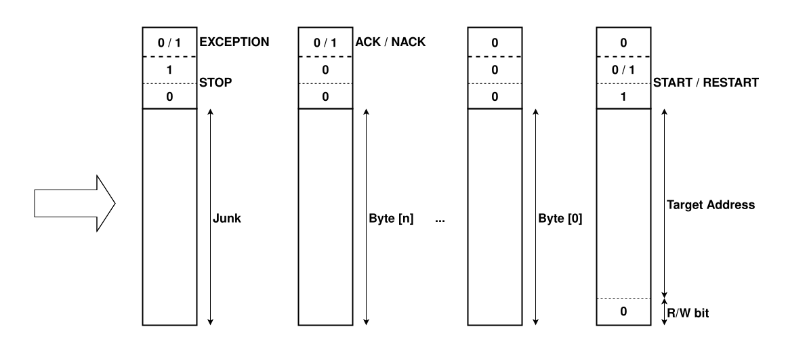
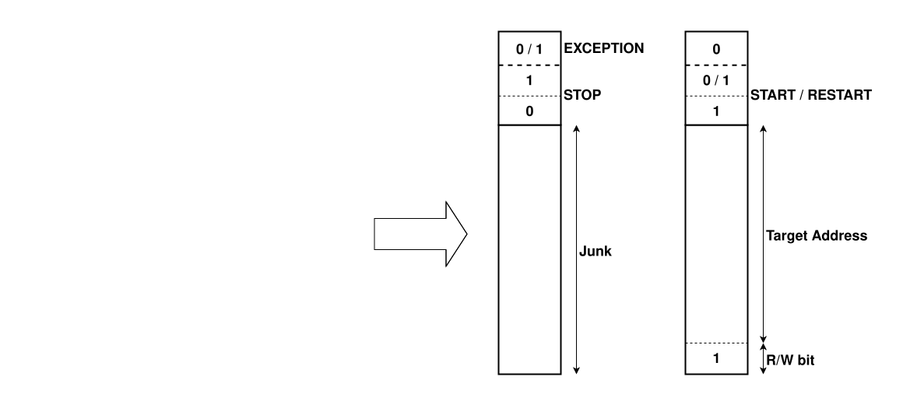

1. I2C Controller
Overview
The OCA I2C Interface Component is a comprehensive I2C/SMBus/PMBus communication controller that provides full-featured support for both controller (master) and target (slave) operation modes. Based on industry standards and featuring robust error handling, configurable FIFOs, and extensive interrupt support, this component enables reliable inter-chip communication in complex system-on-chip designs.
Description and Features
-
Multi-Protocol Support: Full compliance with I2C Rev. 7.0, SMBus Rev. 3.2, and PMBus Rev. 1.4 specifications
-
Dual Operating Modes: Configurable as controller-only, target-only, controller-target, or bus monitor
-
High-Speed Operation: Support for Standard-mode (100 kbaud), Fast-mode (400 kbaud), and Fast-mode Plus (1 Mbaud)
-
Advanced Controller Features: Clock stretching support, automatic ACK control, multi-controller arbitration
-
Flexible Target Capabilities: Automatic clock stretching, programmable ACK control, broadcast transfer support
-
Configurable FIFO Architecture: Independent TX/RX FIFO depths for both controller and target modes
Architecture
The I2C Interface Component is a dual-mode I2C/SMBus/PMBus communication controller supporting both controller (master) and target (slave) operations. It is based on the OpenTitan I2C controller. The architecture provides high reliability with configurable timing, robust error handling, and AXI4-Lite integration.

Functional Description
I2C IP is a controller-target combo that can function as an I2C controller and/or an I2C target.
These functional modules are enabled at runtime by setting the register fields CTRL.ENABLEHOST and CTRL.ENABLETARGET.
If the Controller Module is to be used in a multi-controller environment, CTRL.MULTI_CONTROLLER_MONITOR_EN would also need to be set.
Note the ordering requirements in the register description for multi-controller configurations.
The SCL and SDA outputs from the block combine the SCL and SDA outputs from the Controller Module and Target Module. The modules operate as though they were independent devices on the same I2C bus, with any logic low value taking priority.
On the input path, the IP’s clock samples SCL and SDA after a 2-flop synchronizer.
However, the IP’s input pins do not reflect the start point for the full input path delay, since pads and nets from I/O buffers also contribute.
The RTL parameter InputDelayCycles must be set to the maximum number of cycles of delay from the IP’s output pin driving SCL or SDA to the IP’s corresponding input pin sensing the transition.
InputDelayCycles can exclude the rise time that would be captured by TIMING1.T_R.
The reference point for InputDelayCycles is the clock edge after the launch clock edge.
In other words, a value of 0 means that the IP’s 2-flop synchronizer would sample the IP’s own outputs within one clock cycle (if the external pad driver could switch instantaneously).
Control and Status Registers (CSRs)
32-bit AXI4-Lite interface with 8-bit address space:
-
Control Registers: Mode configuration, timing parameters, FIFO thresholds, feature enables
-
Status Registers: Transaction status, FIFO levels, error flags, protocol state
-
Data Registers: FIFO access ports for TX/RX data in controller and target modes
-
Interrupt Registers: Status, enable, and test capabilities
-
Timing Registers: Configurable parameters for I2C speed modes (Standard, Fast, Fast-Plus)
I2C Core Processing Engine
The core engine manages all I2C protocol operations through integrated state machines:
Controller FSM: Manages controller-initiated transactions including address transmission, data transfer, and bus arbitration. Handles START/STOP generation, ACK/NACK processing, and automatic retry mechanisms.
The Controller Module implements all mandatory controller features of the I2C protocol for multi-controller configurations, including clock synchronization and bus arbitration. It also implements support for handling clock stretching.
The state-machine-controlled Controller Module allows for higher-speed operation with less frequent software interaction. In this module, the I2C pins are controlled by the state machine, which in turn is controlled by a sequence of formatting indicators. These indicators determine:
-
The sequence of bytes which should be transmitted on the SDA and SCL pins.
-
The periods between transmitted bytes when the state-machine should stop transmission and instead read back a fixed number of bytes.
-
Which bytes should be preceded by a START symbol.
-
Which bytes should be followed by a STOP symbol.
The format indicator consists of 13-bits.
That is of one single format byte (entered into the format FIFO through FDATA.FBYTE), and five 1-bit flags (entered into the format FIFO through registers FDATA.READB, FDATA.RCONT, FDATA.START, FDATA.STOP and FDATA.NAKOK)
The I2C Control Module reads each format indicator from the head of FMT_FIFO and processes them in turn. If none of the flags are set for the format indicator, the I2C FSM simply transmits the format byte onto the SCL and SDA pins according to the specification, waits for acknowledgement, and then proceeds to the next format indicator. The format flags modulate the behavior as follows:
-
READB (corresponds to
FDATA.READB): Signifies the format byte (FDATA.FBYTE) should be treated as an unsigned number, R, and prompts the state machine to read R bytes from the target device. Bytes read from the bus are inserted into the RX FIFO where they can be accessed by software. A value of 0 is treated as a read of 256 bytes. To read a larger byte stream, multiple 256-byte reads can be chained together using the RCONT flag. -
RCONT (corresponds to FIFO inputs
FDATA.RCONT, only used with READB):-
If RCONT is set, the format byte represents part of a longer sequence of reads, allowing for reads to be chained indefinitely.
-
The RCONT flag indicates the final byte returned with the current read should be responded to with an ACK, allowing the target to continue sending data. (Note that the first R-1 bytes read will still be acknowledged regardless of whether RCONT is asserted or not.)
-
-
START (corresponds to
FDATA.START, Ignored when used with READB): Issue a START condition before transmitting the format byte on the bus. This flag may also be used to issue a repeated start condition. -
STOP (corresponds to
FDATA.STOP): Issue a STOP signal after processing this current entry in the FMT FIFO. Note that this flag is not compatible with (READB & RCONT), and will cause bus conflicts. -
NAKOK (corresponds to
FDATA.NAKOK, Not compatible with READB): Typically every byte transmitted must also receive an ACK signal, and the IP will raise an exception if no ACK is received. However, there are some I2C commands which do not require an ACK. In those cases this flag should be asserted with FBYTE indicating no ACK is expected and no interrupt should be raised if the ACK is not received.
The Controller Module may proceed through all commands in the FMT FIFO as long as no exceptional event occurs. If the Controller Module receives an unexpected NACK, a bus timeout occurs, or arbitration is lost while the Controller Module is transmitting, the module halts. The module will not continue processing commands without software intervention.
Note that a full RX FIFO does not stop command processing. Ensure the RX FIFO has enough space, else overflows can occur.
Controller NACK Handling
If the Controller Module transmits a byte and the 9th bit is a NACK from the Target/Bus, the controller_halt interrupt is usually asserted (modulo the effect of FDATA.NAKOK).
If the controller_halt interrupt is asserted, the Controller FSM will halt until the interrupt condition has been cleared in the CONTROLLER_EVENTS.NACK register.
Software will likely want to do one of two things in handling this irq:
1. End the current transaction by setting CTRL.ENABLEHOST to 1’b0, and clear the FIFOs to be ready to begin a new transaction.
2. Clear the FIFOs, then begin a new transfer without ending the transaction by adding new FDATA indicators to the FMTFIFO.
In this case, the first entry written to the FMTFIFO should have FDATA.START set to 1’b1 to create a repeated start condition.
Software should then clear the CONTROLLER_EVENTS.NACK to proceed with the next operation.
The controller_halt interrupt is a CIP status type, so it doesn’t clear by writing to the INTR_STATE.CONTROLLER_HALT bit.
Instead, the CONTROLLER_EVENTS CSR tracks the contributing events, and all must be cleared for the interrupt to de-assert.
The Halt-on-NACK behaviour may be problematic if SW is not responsive, so there is a timeout mechanism that can automatically end the transaction by creating a STOP condition and returning to halt in an idle state.
This is configured using the HOST_NACK_HANDLER_TIMEOUT CSR, which allows software to configure the delay before hardware will terminate the transaction.
When the timeout occurs, the CONTROLLER_EVENTS.UNHANDLED_NACK_TIMEOUT bit will set, and this condition will also cause the controller_halt interrupt to assert (or remain asserted).
Like the original NACK event, the timeout bit will cause the Controller Module to remain halted until it is cleared.
To continue with a new transaction, software should ensure that the controller_halt interrupt has been handled, with all contributing event bits cleared.
When the FSM first halts due to an unexpected NACK, there is still an ongoing transaction.
The Controller Module stops immediately following the (N)ACK bit’s hold time after the SCL falling edge, and SCL remains asserted low.
If a NACK handling timeout occurs or CTRL.ENABLEHOST is cleared, then the FSM will halt again after the STOP condition is sent.
The STOP condition terminates the transaction, leaving the FSM halted in the "bus idle" state, with SDA and SCL released.
Bus Arbitration
In a multi-controller configuration, the Controller Module may begin transmitting at the same time as another controller.
The Bus Monitor will detect when the Controller Module loses arbitration, such as when it attempts to transmit a logic high, but another device is pulling SDA low.
The monitor will inform the Controller Module, and the Controller Module will abort its command and halt.
The CONTROLLER_EVENTS.ARBITRATION_LOST bit will be set, and the controller_halt interrupt state will reflect that the module is halted.
From here, software must decide what to do.
The FMT FIFO will have the entries that remained, but typically, this event will result in software retrying the full transaction.
In that case, software would clear the FMT FIFO (and possibly the RX FIFO), then load the FMT FIFO with the original commands, starting from the beginning of the transaction.
All bits in CONTROLLER_EVENTS must be cleared for the Controller Module to release from the halted state.
Target FSM: Provides complete target device functionality with address recognition, automatic clock stretching, and configurable ACK responses. Supports broadcast address handling and multi-controller environments.
The Target Module implements all mandatory features for targets in multi-controller configurations, as enumerated in the I2C specification. It also supports clock stretching from that same specification.
In addition, the Target Module has the necessary mechanisms to support mandatory SMBus 3.0 features, as well as dynamically-assigned addresses using the SMBus Address Resolution Protocol. Address bytes may be configured to be always ACK’d, and the Target ACK Control feature may be used to stretch the clock until software can decide whether to ACK the incoming byte. The Target Module can also be configured to observe SMBus’s maximum cumulative target clock extension time. There is no hardware support for calculating or checking the Packet Error Code, however; these values would need to be handled in software.
Target Address Registers
Every transfer involving the I2C Target Module begins with an address. The I2C Target Module supports up to two 7-bit address and 7-bit mask pairs. The Target Module accepts a transaction if the result of the bitwise AND operation performed on the transaction address sent by the controller and a mask matches the assigned address corresponding to the mask. In other words, address matching is performed only for bits where the mask is "1". Thus, with the masks set to all ones (0x7F), the target device will respond to either of the two assigned unique addresses and no other. If the mask and the assigned address both have zeros in a particular bit position, that bit will be a match regardless of the value of that bit received from the controller. Note that if, in any bit position, the mask has zero and the assigned address has one, no transaction can match and such mask/address pair is effectively disabled.
Finally, in the special case where the mask is all zeroes (0x00), then that corresponding entry is ignored and will not match. If the user wishes to have the target respond to all addresses, then this can be achieved by setting mask0 and mask1 to 0x01 and setting address0 to 0x00 and address1 to 0x01.
The assigned address and mask pairs are set in registers TARGET_ID.ADDRESS0, TARGET_ID.MASK0, TARGET_ID.ADDRESS1, and TARGET_ID.MASK1.
Target Transfers
When the Target Module accepts a transfer, it acquires the transfer address, read/write bit, and START signal sent by the controller and inserts them into ACQ FIFO, where they can be accessed by software.
ACQDATA represents the ACQ FIFO output.
See the register description for more information about the representation.
If the transfer is a write operation (R/W bit = 0), the target proceeds to read bytes from the bus and insert them into ACQ FIFO until the controller terminates the transfer by sending a STOP or a repeated START signal. A STOP or repeated START indicator is inserted into ACQ FIFO as the next entry following the last byte received, in which case other bits may be junk or the target address, respectively.
Note that the repeated START indicator only appears if it matches the address. Typically, this is the case, and a transaction that changes targets between transfers is strongly discouraged. If no additional transfers targeting this target’s address occur, an entry representing the end of the transfer will wait for the STOP symbol.
The following diagram shows consecutive entries inserted into ACQ FIFO during a write operation, assuming no NACK conditions:

See Target NACKs for more information about NACK conditions and the effect on the operation.
If the transaction is a read operation (R/W bit = 1), the target pulls bytes out of TX FIFO and transmits them to the bus until the controller signals the end of the transfer by sending a NACK signal.
Under certain conditions, the target will hold SCL low to stretch the clock and give software time to write data bytes into TX FIFO or handle the available command.
The conditions include the following:
* TX FIFO holding no data
* the ACQ FIFO containing more than the 1 entry representing the address/command byte
* TARGET_EVENTS holding at least one unhandled event
See [stretching-during-read] for more details.
Note that data for TX FIFO is pushed through the register TXDATA.
Typically, a NACK signal is followed by a STOP or repeated START signal; the IP will raise an exception if the controller sends a STOP signal after an ACK.
The ACK/NACK signal is represented in the MSB of ACQDATA.SIGNAL, in the same entry as the STOP or repeated START signal.
For ACK signals, the value of the MSB is 0; for NACK signals, the value is 1.
The following diagram shows consecutive entries inserted into ACQ FIFO during a read operation:

Target Clock Stretching
As described in the I2C specification, a target device can pause a transaction by holding SCL low. There are 3 cases in which this design stretches the clock: * After the target receives the address but before pushing it to the ACQ FIFO * Before the (N)ACK bit completes transmission during a write transfer * After the ACK bit is sent by the controller-transmitter during a read transfer
Stretching after address read
When a target device receives a start, the address and R/W bit are written into the ACQ FIFO.
If there is no space in the ACQ FIFO to receive such a write, the target stretches the clock after the ACK bit and waits for software to make space.
The acq_stretch interrupt is generated to alert software to such a situation.
Stretching during write
If the controller tries to write a data byte into the ACQ FIFO when there is no available space, the clock is stretched before the rising edge of SCL on the ACK bit. In addition, the Target Module may stretch if Target ACK Control Mode is enabled and the Auto ACK Counter has reached 0. See the Target ACK Control Mode section for more about it.
The acq_stretch interrupt is generated to alert software to these situations.
Stretching during read
When a target device receives a start and read command, it may stretch the clock for any of the following reasons:
* If there is no data available to be sent back (TX FIFO empty case), the target stretches the clock until data is made available by software.
* If there is more than 1 entry in the ACQ FIFO.
Having more than 1 entry in the ACQ FIFO suggests there is potentially an unhandled condition (STOP / RESTART) or an unhandled command (START) that requires software intervention before the read can proceed.
* If there is an unhandled event in TARGET_EVENTS.
The tx_stretch interrupt is generated to alert software to such a situation.
Target NACKs
When the Target Module replies with a NACK during the (N)ACK phase, it indicates that it is unable to accept the byte or command. The NACK response is sticky until the end of the transaction. In other words, once the Target Module issues its first NACK, it will NACK all subsequent bytes in the transaction, with one caveat.
Assuming CTRL.NACK_ADDR_AFTER_TIMEOUT is 0, a matching address will always elicit an ACK response, which is required by SMBus.
However, if the Target Module had already issued a NACK in this transaction, that byte will not be pushed to the ACQ FIFO.
After committing to NACKing the transaction, the Target Module will leave SDA released high for all bits except the ACK of a matching address byte.
The decision to NACK will show up in the ACQ FIFO by the end of the first transaction to be NACK’d.
The final space in the ACQ FIFO is reserved for the STOP condition of a transaction, so in all cases where a START signal reached the ACQ FIFO, that first NACK’d transaction will always end with a NACK_STOP signal.
For write transactions, the particular NACK’d data byte will also be in the ACQ FIFO if there was space.
If software does not handle any persisting issues that caused NACKing and the next transaction leads to the Target Module NACKing again, all associated data will be dropped while the ACQ FIFO is full.
The decision to NACK the transaction can occur for any of the following reasons:
* A timeout after stretching the clock
If enabled by TARGET_TIMEOUT_CTRL
* Bus arbitration for the target was lost, such as during SMBus ARP broadcast commands
* The controller’s SCL low period is detected to be too short for a response
* Software directed the Target Module to NACK
Software has some control if ACK Control Mode is enabled
Target ACK Control Mode
ACK Control Mode is a feature that allows software to take control of ACK/NACK decisions during a Write transfer.
When ACK Control Mode is disabled in CTRL.ACK_CTRL_EN, the Target module will automatically ACK any incoming data byte, so long as there is sufficient space in the ACQ FIFO.
If there isn’t enough space for the data byte and a STOP, the Target module will stretch the clock until space is made available (or a stretch timeout occurs).
However, if ACK Control Mode is enabled, the TARGET_ACK_CTRL CSR can also cause the Target module to stretch the clock at the (N)ACK phase.
In ACK Control Mode, an Auto ACK Counter influences whether the Target module automatically ACKs a data byte when there is space in the ACQ FIFO.
The counter begins at 0 for every transfer, and it decrements for every data byte that is ACK’d.
In addition, this counter only applies to the bytes in a Write transfer that follow the address byte.
When a transfer reaches the (N)ACK phase and the TARGET_ACK_CTRL.NBYTES CSR is 0, the Target module stretches the clock and awaits instructions from software, up to the stretch timeout.
Note that because the Auto ACK Counter begins every transfer at 0, the first data byte will always stretch the clock.
To release SCL before the timeout, software can choose whether to ACK or NACK the byte.
To ACK the byte, software would program the Auto ACK Counter to a greater number, and if the value programmed is greater than 1, it would automatically ACK subsequent bytes as well.
Even with a nonzero count, though, the Target module could still stop and stretch the clock if the ACQ FIFO doesn’t have sufficient space.
Otherwise, software can explicitly NACK that byte and the rest of the transaction by writing a 1 to TARGET_ACK_CTRL.NACK.
If the Target module is not stretching the clock, writes to TARGET_ACK_CTRL are ignored.
With the data byte pending in the (N)ACK phase, it hasn’t been written to the ACQ FIFO yet.
Instead, software can read the ACQ_FIFO_NEXT_DATA CSR to decide what to do.
Note that after software indicates its decision, this pending byte will still enter the ACQ FIFO if there is space, accompanied by the metadata reflecting whether it was ACK’d or NACK’d.
This feature is intended to support protocols that require mid-transfer NACK decisions based on the current data transferred (e.g. as in SMBus).
FIFO Management System
| FIFO | Controller Mode | Target Mode |
|---|---|---|
TX FIFO |
64 entries (addresses, write data) |
64 entries (read response data) |
RX FIFO |
64 entries (received data) |
268 entries (addresses, write data) |
Features |
Configurable depth, threshold interrupts, DMA ready signals, overflow/underflow protection |
Configurable depth, threshold interrupts, DMA ready signals, overflow/underflow protection |
Data Flow Architecture
Controller Mode Data Flow:
-
Command Phase: Software writes address and control information to FMT FIFO
-
Transmission Phase: Controller FSM reads from FMT FIFO and drives I2C bus
-
Reception Phase: Received data is stored in RX FIFO for software retrieval
-
Completion Phase: Transaction completion triggers interrupt and status updates
Target Mode Data Flow:
-
Address Recognition: Target FSM monitors bus for matching addresses
-
Data Reception: Incoming data is stored in ACQ FIFO with address information
-
Data Transmission: During read operations, data is sourced from TX FIFO
-
Flow Control: Automatic clock stretching manages timing constraints
Control Path Architecture
The control path coordinates operation between multiple state machines:
-
Register Interface: Translates AXI4-Lite transactions to internal control signals
-
Mode Control: Switches between controller, target, and monitor modes
-
FIFO Control: Manages data flow and threshold-based signaling
-
Interrupt Control: Aggregates status from multiple sources
-
Error Handling: Detects and reports protocol violations and timeout conditions
Controller State Machine
The controller FSM implements the complete I2C controller protocol:
| State | Description |
|---|---|
IDLE |
Waiting for FMT FIFO data or software commands |
START |
Generating START condition and preparing for address transmission |
ADDRESS |
Transmitting 7-bit address and R/W bit |
ACK_ADDRESS |
Waiting for and processing address acknowledgment |
WRITE_DATA |
Transmitting data bytes for write operations |
ACK_WRITE |
Processing acknowledgments for transmitted data |
READ_DATA |
Receiving data bytes for read operations |
ACK_READ |
Generating ACK/NACK for received data |
STOP |
Generating STOP condition and completing transaction |
ARBITRATION |
Handling multi-controller arbitration scenarios |
Input Signal Processing
To ensure reliable and noise-immune operation, all external I2C signals are conditioned through a multi-stage process. Incoming signals first undergo a configurable input delay (via the INPUT_DELAY_CYCLES parameter) to account for timing differences, followed by dual-stage synchronization to safely cross clock domains and guard against metastability.
A glitch filter rejects short noise pulses, and edge detection logic identifies precise rising and falling transitions needed for protocol handling. Together, these mechanisms provide robust debouncing, level detection with hysteresis, and stable sampling in noisy environments, with the ability to configure delay compensation from 0 to 255 cycles.
Timing Parameter Management
For Standard-mode, Fast-mode and Fast-mode Plus, the timing requirements for each transaction are detailed in Table 10 of the I2C specification (rev. 6). To claim complete compatibility at each mode, the state machine timings need to be adapted to whether there are Standard-mode, Fast-mode and Fast-mode Plus targets on the bus. Furthermore, depending on the actual capacitance of the bus, even a bus with all Fast-mode Plus capable targets may have to operate at slower speeds than 1 Mbaud. For example, the controller may need to run at lower frequencies, as discussed in Section 5.2 of the specification, but the computation of the nominal frequency will depend on timing specifications in Table 10, in this case particularly, the limits on tLOW, tHIGH, tr, and tf. Assuming no clock stretching, for a given set of these four parameters the baud rate is then given to be:
Thus in order to ensure compliance with the spec in any particular configuration, software will program the I2C controller IP with explicit values for each of the following timing parameters, as defined in Figure 38 of the specification.
-
tLOW: set in register
TIMING0.TLOW. -
tHIGH: set in register
TIMING0.THIGH. -
tr: set in register
TIMING1.T_R. (Note: The rise time cannot be explicitly controlled by internal hardware, and will be a function of the capacitance of the bus. Thus this parameter is largely budgetary, meaning that it tells the state machine how much time to wait for an RC rise.) -
tf: set in register
TIMING1.T_F. (Note: The fall time cannot be explicitly controlled by internal hardware, and is a function of the pin driver. Thus this parameter is also budgetary. Given that the actual fall time cannot be controlled to stay above the minimum values set in Table 10 of the specification, and so this in this regard this module currently is not strictly compliant to the I2C spec. The system design is responsible for meeting the spec’s minimum fall time.) -
tSU,STA: set in register
TIMING2.TSU_STA -
tHD,STA: set in register
TIMING2.THD_STA -
tSU,DAT: set in register
TIMING3.TSU_DAT. Taken to be synonymous with TSU,ACK -
tHD,DAT: set in register
TIMING3.THD_DAT. Taken to be synonymous with THD,ACK. Moreover, since the pin driver fall time is likely to be less then one clock cycle, this parameter is also taken to be synonymous with the parameters TVD,DAT and TVD,ACK This parameter controls the number of cycles after the falling edge of SCL that SDA is driven. In addition, when the IP operates as a target, the parameter specifies the required SCL high time after SDA changes to satisfy the Start and Stop symbol decoders. -
tSU,STO: set in register
TIMING4.TSU_STO. -
tBUF: set in register
TIMING4.T_BUF
The values programmed into the registers TIMING0 through TIMING4 are to be expressed in units of the input clock period.
It is important that the internal clock is at least 50x the bus clock so that the proportions of the timings can be accurately captured.
Note in order to ensure compliance with the I2C spec, firmware must program these registers with values within the ranges laid out in Table 10 of the specification.
These values can be directly computed using DIFs given the desired speed standard, the desired operating frequency, and the actual line capacitance.
These timing parameters are then fed directly to the I2C state machine to control the bus timing.
A detailed description of the algorithm for determining these parameters—as well as a couple of concrete examples—are given in the Timing Parameter Tuning Algorithm.
Note that the IP also has minimum values for TIMING0.TLOW, TIMING0.THIGH, TIMING2.THD_STA, and TIMING3.THD_DAT.
THD_DAT must be at least 1, and to disambiguate START conditions from early SDA arrival, THD_STA must be at least 2 cycles longer than THD_DAT.
The low count must be long enough to cover the round-trip time of the Controller Module’s SCL drive to the target through the sampling of the target’s data driven on SDA.
As there is an output flop, a 2-flop synchronizer, a rise time, and a pad input delay all on the path, TLOW must be at least 3 cycles + T_R + InputDelayCycles.
Similarly, the high count must be long enough to cover the a round-trip time to sense outputs for various conditions (e.g. lost arbitration, target clock stretching, etc.).
THIGH must be at least 4 cycles + InputDelayCycles.
The component supports complete I2C timing parameter configuration:
| Parameter | Description |
|---|---|
tHIGH |
SCL high time (supports 100kHz, 400kHz, 1MHz modes) |
tLOW |
SCL low time (symmetric or asymmetric clock duty cycle) |
tR/tF |
Rise and fall time limits for signal transitions |
tHD_STA |
Hold time for START condition |
tSU_STA |
Setup time for repeated START condition |
tSU_STO |
Setup time for STOP condition |
tSU_DAT/tHD_DAT |
Data setup and hold times |
| Parameter | Description |
|---|---|
Bus Active Timeout |
Detection of stuck bus conditions |
Stretch Timeout |
Clock stretching duration limits |
Host Timeout |
Controller operation timeout |
NACK Timeout |
Target response timeout |
Bus Timeout or Stretch Timeout
A malfunctioning (or otherwise very slow) target device can hold SCL low indefinitely, stalling the bus.
In addition, in an SMBus context, a controller can purposefully hold SCL low for an extended period of time (tTIMEOUT:MIN) to force a bus timeout.
For these reasons, TIMEOUT_CTRL provides a timeout mechanism for determining one of two variants of an SCL low timeout.
Enabling a timeout at all requires setting TIMEOUT_CTRL.EN and configuring TIMEOUT_CTRL.VAL with the desired number of cycles to count before timing out.
With the configuration of TIMEOUT_CTRL.MODE, one of two types of timeouts can be selected.
If a STRETCH_TIMEOUT is selected, the Controller Module detects when some other device holds SCL low for more cycles than than TIMEOUT_CTRL.VAL clock ticks.
If the counter expires, the stretch_timeout interrupt will be asserted.
If a BUS_TIMEOUT is selected, the SCL low time accumulates across all sources, including this IP’s Controller Module.
This counter mode can be used to detect SMBus’s definition of a bus timeout.
If a bus timeout occurs while the Controller Module is active, the corresponding CONTROLLER_EVENTS.BUS_TIMEOUT bit is set, halting the Controller Module and requiring handling from software before the next command will process.
Similarly, if a bus timeout occurs while the Target Module was addressed in the current transaction, a NACK_STOP signal is added to the ACQ FIFO.
In addition, if the last command byte addressing the module issued a read operation, TARGET_EVENTS.BUS_TIMEOUT will be set, causing the Target Module to stretch the clock on read operations until software handles the event.
For both cases, the counter resets when SCL goes high, so this count only accumulates during a single bit transfer.
SCL Idle Timeout
The I2C IP provisions a counter for detecting when SCL has remained high for too long during an active transaction.
HOST_TIMEOUT_CTRL is optionally enabled, determined by whether the register value is nonzero.
If this timeout occurs in multi-controller monitor mode with SDA released high, the Bus Monitor uses this as a "bus idle" condition, which allows the Controller Module to begin transmitting. This timeout can be used to implement SMBus’s tHIGH,MAX bus idle condition. In addition, the SCL Idle Timeout is used by the Bus Monitor to set up waiting for a bus idle condition at init, if multi-controller monitor mode was enabled no later than the Controller Module.
If an active transfer is targeting this IP’s Target Module, this timeout will trigger a host_timeout interrupt.
Unlike the bus timeout, the idle timeout does not trigger an end to the command, so the controller could potentially recover.
Instead, the interrupt is merely informative.
However, a START condition from any device will terminate the transfer, and that includes the Controller Module.
Note that this behavior could cause transaction boundaries to be lost; the Target Module will report that this next START condition is a repeated START.
Target Module Stretch Timeout
If enabled with TARGET_TIMEOUT_CTRL.EN, the Target Module will automatically NACK transactions if it stretches the clock for more cycles than TARGET_TIMEOUT_CTRL.VAL.
This counter accumulates across an entire transaction, and with the correct choice of timeout value, it complies with SMBus’s specified maximum cumulative clock extension time for the target.
Memory and FIFO Architecture
The I2C interface uses flexible, configurable memory blocks to implement its FIFOs, allowing the choice of memory type (SRAM, register, or hybrid) and standard RAM interface options for memory timing. When available, error correction (ECC) and power-saving features are supported.
FIFO depth is set at compile time, with each FIFO providing interrupt generation based on programmable thresholds, almost-full and almost-empty indicators, robust protection against overflow and underflow, as well as reset and flush mechanisms for reliable and efficient data handling.
Error Handling and Diagnostics
The I2C component provides comprehensive automatic detection and protection against protocol and system-level errors, including:
-
Bus errors: Arbitration loss, address/data NACKs, clock stretching violations, and stuck bus detection.
-
FIFO faults: Overflow, underflow, and threshold violations.
-
Register errors: Invalid register access and parameter conflicts.
For recovery, the hardware supports automatic controller state resets, FIFO clearing, bus recovery sequences, and interrupt-based fault signals. Status and error registers capture detailed fault codes.
Diagnostic features include real-time monitoring of I2C activity, bus event logging with timestamps, and visibility into internal state machine status. Hardware counters track transaction completions and error events to aid debugging and performance tuning. SCL and SDA line status can be monitored to quickly identify electrical or protocol-level problems.
Interrupts
The I2C module has a few interrupts including general data flow interrupts and unexpected event interrupts.
Controller Module
Whenever the RX FIFO exceeds the designated number of entries, the interrupt rx_threshold is asserted to inform firmware.
Firmware can configure the threshold value via the register HOST_FIFO_CONFIG.RX_THRESH.
Whilst the FMT FIFO level lies below a designated number of entries, the fmt_threshold interrupt is asserted.
Firmware can configure the threshold value via the register HOST_FIFO_CONFIG.FMT_THRESH.
If the RX FIFO receives an additional write request when its FIFO is full, the interrupt rx_overflow is asserted and the character is dropped.
If the module transmits a byte and the 9th bit is a NACK from the Target/Bus, the controller_halt interrupt is usually asserted (modulo the effect of FDATA.NAKOK).
If the controller_halt interrupt is asserted, the Controller Module FSM will halt until the interrupt has been acknowledged.
See Controller NACK Handling above for more details on this behaviour.
In addition, the interrupt will be asserted if any of the other halt-causing events occur, such as a bus timeout or a loss of arbitration.
This interrupt is a status type that requires clearing all triggering event latches before it will deassert.
When the Controller Module is actively transmitting, the scl_interference or sda_interference interrupts will be asserted if the IP identifies that some other device (controller or target) on the bus is forcing either signal low and interfering with the transmission.
It should be noted that the scl_interference interrupt is not raised in the case when the target device is stretching the clock.
However, it may be raised if the target allows SCL to go high and then pulls SCL down before the end of the current clock cycle.
The scl_interference interrupt should be masked in multi-controller environments, since clock synchronization between controllers can trigger its assertion.
The sda_interference interrupt is raised whenever the Controller Module detects that another device is pulling SDA low while the Controller Module is trying to transmit logic high.
On the other hand, it is legal for a target device to assert SCL low for clock stretching purposes.
With clock stretching, the target can delay the start of the following SCL pulse by holding SCL low between clock pulses.
However the target device must assert SCL low before the start of the SCL pulse.
If SCL is pulled low during an SCL pulse which has already started, this interruption of the SCL pulse will be registered as an exception by the I2C core, which will then assert the scl_interference interrupt.
Though normal clock stretching does not count as SCL interference, if the module detects that a target device has held SCL low and stretched any given SCL cycle for more than TIMEOUT_CTRL.VAL clock ticks this will cause the stretch timeout interrupt to be asserted.
This interrupt is suppressed, however, if TIMEOUT_CTRL.EN is deasserted low or if the bus timeout is selected for TIMEOUT_CTRL.MODE.
Except for START and STOP symbols, the I2C specification requires that the SDA signal remains constant whenever SCL is high.
The sda_unstable interrupt is asserted if, when receiving data or acknowledgement pulse, the value of the SDA signal does not remain constant over the duration of the SCL pulse, causing an unexpected START or STOP symbol.
Transactions are terminated by a STOP signal, but individual transfers within a transaction can be completed by a STOP signal or a repeated START signal.
When a transfer completes, the cmd_complete interrupt is asserted, in the beginning of a repeated START or at the end of a STOP.
This interrupt is overloaded and represents the full IP’s participation in any bus transactions.
The Target Module’s transfers also signal cmd_complete.
Target Module
As mentioned above, the interrupt cmd_complete is asserted whenever a RESTART or a STOP bit is observed by the target, for a transfer that addressed the Target Module.
The interrupt tx_stretch is asserted whenever the Target Module intends to transmit data but cannot.
If software sets the bit CTRL.TX_STRETCH_CTRL_EN, the Target Module will require software to confirm release of the TX FIFO at the beginning of every read transfer addressed to it.
This behaviour may be useful to software, as any remaining data in the TX FIFO after a Sr/P condition may no longer apply to the next transfer, so it may have to be cleared out via FIFO_CTRL.TXRST.
For more on stretching on read transfers, see [stretching-during-read].
When a controller receives enough data from a target, it usually signals the end of the transaction by sending a NACK followed by a STOP or a repeated START.
In a case when the Target Module receives a STOP without the prerequisite NACK, the interrupt unexp_stop is asserted.
This interrupt just means that a STOP was unexpectedly observed during a controller read.
It is not necessarily harmful, but software can be made aware just in case.
If the ACQ FIFO exceeds the designated number of entries, the interrupt acq_threshold is raised to inform firmware.
Firmware can configure the threshold value via the register TARGET_FIFO_CONFIG.ACQ_THRESH.
Whilst the TX FIFO level is below a designated number of entries the tx_threshold interrupt is asserted.
Firmware can configure the threshold value via the register TARGET_FIFO_CONFIG.TX_THRESH.
If the Target Module stretches the clock as a target-receiver, the interrupt acq_stretch is asserted.
This can be due to a full ACQ FIFO, or it can be due to an ACK Control Mode stretch request.
If ACK Control Mode is enabled, check the relevant bits in STATUS to determine the reason(s).
The acq_stretch interrupt is a Status type, so it will only de-assert once the stretch conditions are cleared.
If a controller ceases to send SCL pulses at any point during an ongoing transaction, the target waits for a specified time period and then asserts the interrupt host_timeout.
A controller sending an address and R/W bit to all target devices, writing to the selected target, or reading from the target are examples of ongoing transactions.
The time period is counted from the last low-to-high SCL transition and continues counting until SCL goes low.
Firmware can configure the timeout value via the register HOST_TIMEOUT_CTRL.
SMBus and PMBus Protocol Support
The I2C component provides comprehensive hardware support for SMBus (System Management Bus) and PMBus (Power Management Bus) protocols, which build upon the I2C physical layer with additional timing, electrical, and protocol requirements.
SMBus Physical Interface
The component includes dedicated SMBus signal pins beyond standard I2C:
-
SMBSUS# (SMBus Suspend): Bidirectional signal for power management and bus suspension
-
Controller Mode: Controlled via
SMBUS_CTRL.SMBSUSregister to drive the line low -
Target Mode: Status monitored via
SMBUS_STATUS.SMBSUSregister -
Used for system power state transitions and low-power modes
-
-
SMBALERT# (SMBus Alert): Bidirectional interrupt signal for target-initiated communication
-
Target Mode: Controlled via
SMBUS_CTRL.SMBALERTregister to signal attention request -
Controller Mode: Status monitored via
SMBUS_STATUS.SMBALERTregister, interrupt viaINTR_STATE.SMBALERT -
Alert Response Address (ARA) protocol for multi-target SMBus systems
-
SMBus Timeout Management
SMBus protocols enforce strict timing requirements with cumulative timeout tracking:
Target Timeout Control (TARGET_TIMEOUT_CTRL register):
-
Implements SMBus cumulative clock extension time requirements
-
Tracks total clock stretching duration across an entire transaction
-
Configurable timeout value in system clock cycles
-
Automatic NACK generation when timeout expires
-
Separate control for address byte handling via
CTRL.NACK_ADDR_AFTER_TIMEOUT:-
0: ACK address even on timeout (SMBus compliant behavior) -
1: NACK address when timeout occurs
-
Controller Timeout Detection (HOST_TIMEOUT_CTRL register):
-
Detects when a controller stops generating clock signals
-
Target mode: Generates
HOST_TIMEOUTinterrupt -
Monitor mode: Required for proper bus state tracking
-
Ensures detection of hung or failed controllers
SMBus ACK/NACK Control
SMBus protocols require sophisticated mid-transaction NACK capability for flow control and error handling:
ACK Control Mode (CTRL.ACK_CTRL_EN = 1):
-
Software-controlled acknowledgment on per-byte basis
-
TARGET_ACK_CTRL.NBYTEScounter specifies number of bytes to accept -
When counter reaches zero, target stretches clock and sets
STATUS.ACK_CTRL_STRETCH -
Software options:
-
Accept additional bytes by reloading
NBYTEScounter -
Reject transaction by setting
TARGET_ACK_CTRL.NACK
-
-
ACQ_FIFO_NEXT_DATAregister provides preview of pending byte for decision-making
Automatic ACK Mode (CTRL.ACK_CTRL_EN = 0):
-
Traditional I2C behavior with FIFO-based flow control
-
Target ACKs while ACQ FIFO has available space
-
Automatic NACK when FIFO full
SMBus Packet Error Checking (PEC)
While the I2C hardware does not implement CRC-8 calculation in hardware, it provides the necessary software control points:
-
Byte-by-byte data access through FIFOs enables software CRC calculation
-
ACK Control Mode allows validation before accepting the PEC byte
-
Mid-transaction NACK capability supports rejecting invalid packets
-
ACQ_FIFO_NEXT_DATApreview enables PEC verification before acceptance
PMBus Protocol Extensions
PMBus builds on SMBus with power management specific features, all supported by the underlying I2C/SMBus implementation:
-
Group Command Protocol: Multi-device command support through standard I2C repeated START
-
Extended Commands: 16-bit command codes via sequential byte transmission
-
Block Read/Write: Variable-length transfers using FIFO depth and threshold management
-
Alert Response Protocol: Hardware
SMBALERT#signal with ARA address support -
Zone Read/Write: Sequential register access via FIFO streaming
Hybrid Mode Support
The I2C component supports SMBus hybrid mode operation:
-
Simultaneous controller and target enable (
ENABLEHOST = 1,ENABLETARGET = 1) -
Bus monitor tracks multi-controller environment
-
Automatic arbitration and collision detection
-
Independent timeout monitoring for each mode
Implementation Details: Format Flag Parsing
To illustrate the behavior induced by various flags added to the formatting queue, the following figure shows a simplified version of the I2C_Controller state machine.
In this simplified view, many sequential states have been collapsed into four sub-sequences of states (shown in square brackets) or have their names abbreviated:
* Issue start
* Issue stop
* Transmit Byte
* Read Bytes
Within each of these sub-sequences, state transitions depend only on the SDA/SCL inputs or internal timers. Each sub-sequence has a terminal event—generically labeled "[completed]" which prompts the transition to another sequence or state.
However, all transitions which are dependent on formatting flags are shown explicitly in this figure.
The Controller FSM operates as follows: * From IDLE state, when FMT FIFO is not empty, it transitions to ACTIVE state * From ACTIVE state: If READB flag is set, transitions to Read Bytes sequence If START flag is set (and not READB), transitions to Issue Start sequence, then to Transmit Byte Otherwise, transitions directly to Transmit Byte sequence * After Read Bytes completes: If STOP flag is set, transitions to Issue Stop sequence, then to POP_FMT_FIFO Otherwise, transitions directly to POP_FMT_FIFO * After Transmit Byte completes: If STOP flag is set, transitions to Issue Stop sequence, then to POP_FMT_FIFO Otherwise, transitions directly to POP_FMT_FIFO * After Issue Stop completes, transitions to POP_FMT_FIFO * From POP_FMT_FIFO: If FMT FIFO is empty, returns to IDLE ** Otherwise, transitions to ACTIVE for next format indicator
Similarly, the Target FSM operates as follows: * From IdleStart state, transitions to AddrRead * From AddrRead: If address doesn’t match, transitions to WaitForStop If address matches, transitions to AddrAck * From AddrAck, if stretch_addr condition, transitions to StretchAddr, otherwise forks based on R/W bit: If R/W = 0 (write), enters Tx state machine: * If tx_fifo_rvalid and !tx_halt, transitions to TxByte, then TxAck * If !tx_fifo_rvalid and !tx_halt, transitions to StretchTx, then TxByte when data available * If ack received, returns to fork; if !ack, exits Tx state If R/W = 1 (read), enters Rx state machine: * If acq_fifo_wready and can_auto_ack, transitions to AcquireByte, then AcquireAck * If !acq_fifo_wready or !can_auto_ack, transitions to StretchAcq, then AcquireByte when ready * If ack sent, returns to fork; if !ack, exits Rx state * From Tx or Rx state, transitions to WaitForStop * From WaitForStop, returns to IdleStart
Virtual Open Drain
In devices which lack a true open drain buffer functionality, this IP implements a "virtual Open Drain" functionality. The SDA and SCL outputs are assumed to be connected to a tri-state buffer, with independent enable outputs for both signals.
Rather than toggling the buffer inputs, the buffer inputs are continuously asserted low, and instead the buffer enable signals are toggled. The SDA or SCL buffers are enabled for a logical "Low" output on the respective signal, and are disabled for logical "High" outputs. This arrangement allows the output pins to float high if there is no conflict from external devices, or to be pulled low if there is a conflict (as is required for clock-stretching or multi-controller functionality).
This arrangement is necessary for FPGA builds.
Glitch Filter
The IP does not currently implement the specification’s required 50 ns glitch filter. For full spec compliance, the glitch filter must be added to the system design.
Override Mode for Direct Pin Access
The I2C hardware interface consists of two external pins, SCL and SDA, whose behavior is described in the I2C specification (rev. 6). These pins are typically controlled by an internal state machine. However, there is a simpler "override" mode, by which these pins can be directly manipulated by software. This override mode is useful for both troubleshooting and error recovery.
To enter override mode, the register field OVRD.TXOVRDEN is asserted by software.
In this state the output drivers scl_tx_o and sda_tx_o are controlled directly by the register fields OVRD.SCLVAL and OVRD.SDAVAL.
When OVRD.SCLVAL and OVRD.SDAVAL are set high, the virtual open drain configuration will leave the output resistively pulled high, and controllable by remote targets.
In this state, with SCL or SDA asserted high, the register fields VAL.SCL_RX and VAL.SDA_RX can be used to receive inputs (including remote acknowledgments) from target devices.
FSM control of SCL and SDA
SCL and SDA are generated through the internal state machine of the controller and target modules. Since SCL is directly decoded from the states, it can have short glitches during transition which the external target may be sensitive to if it is not using an over-sampling scheme. To counter this, the SCL and SDA outputs from the internal state machine are flopped before they are emitted.
This adds a one cycle module clock delay to both signals. If the module clock is sufficiently faster than I2C line speeds (for example 24MHz), this is not an issue. However if the line speeds and the module clock speeds become very close (2x), the 1 cycle delay may have an impact, as the internal state machine may mistakenly think it has sampled an SDA that has not yet been updated.
Therefore, it is recommended that the internal module clock frequency is much higher than the line speeds. Another reason to have this higher internal clock frequency is that the timing parameters can be more accurately defined, which helps attain the desired I2C clock rate. Since there are currently also a few cycles discrepancy between the specified timings and the actual ones (as described in the Timing Parameter Tuning Algorithm), it is recommended that the internal module clock frequency is at least 24x higher than the I2C line speeds.
Interface
The I2C Interface Component provides signal interfaces supporting I2C, SMBus, and PMBus protocols with AXI4-Lite register access and DMA integration.
Configuration Parameters
| Parameter | Default | Description |
|---|---|---|
CTRL_TX_FIFO_DEPTH |
64 |
Controller mode TX FIFO depth (entries) |
CTRL_RX_FIFO_DEPTH |
64 |
Controller mode RX FIFO depth (entries) |
TGT_TX_FIFO_DEPTH |
64 |
Target mode TX FIFO depth (entries) |
TGT_RX_FIFO_DEPTH |
268 |
Target mode RX FIFO depth (entries) |
ADDR_WIDTH |
8 |
Register address width (bits) |
DATA_WIDTH |
32 |
Data bus width (bits) |
Global Interface
| Signal Name | Width | Direction | Active | Description |
|---|---|---|---|---|
|
1 |
Input |
Rising |
System clock. All logic operates synchronously to this clock. Minimum frequency depends on desired I2C speed and timeout requirements. |
|
1 |
Input |
Low |
System reset. Asynchronous assertion and synchronous deassertion. Resets all state machines, FIFOs, and control logic to known states. |
Memory Configuration Interface
| Signal Name | Width | Direction | Description |
|---|---|---|---|
|
struct |
Input |
RAM configuration input. Controls memory timing, power settings, and test modes for internal FIFO memories. |
|
struct |
Output |
RAM configuration response. Provides status and acknowledgment for memory configuration requests. |
Configuration Parameters: - Timing Control: Setup/hold times, access delays, and clock-to-output delays - Power Management: Sleep modes, retention settings, and power-on sequences - Test Features: BIST control, scan chain integration, and debug access - ECC Support: Error correction enable, threshold settings (when available)
I2C Physical Interface
The I2C physical interface implements true open-drain signaling with proper electrical characteristics.
| Signal Name | Width | Direction | Active | Description |
|---|---|---|---|---|
|
1 |
Input |
High |
Serial Clock Line input. Connected to SCL bus through appropriate I/O cell. Must have pull-up resistor. |
|
1 |
Output |
Low |
Serial Clock Line output. Open-drain output - drives low only. External pull-up required. |
|
1 |
Input |
High |
Serial Data Line input. Connected to SDA bus through appropriate I/O cell. Must have pull-up resistor. |
|
1 |
Output |
Low |
Serial Data Line output. Open-drain output - drives low only. External pull-up required. |
Electrical Characteristics:
-
Logic Levels: Compatible with I2C specification voltage levels (3.3V, 1.8V, etc.)
-
Drive Strength: Sufficient to drive bus capacitance at target frequencies
-
Input Impedance: High impedance inputs suitable for wired-AND bus operation
-
Output Drive: Open-drain outputs with configurable drive strength
-
Rise/Fall Times: Configurable to meet I2C specification requirements
Input Delay Configuration
The IP’s input pins do not reflect the start point for the full input path delay, since pads and nets from I/O buffers also contribute.
The RTL parameter InputDelayCycles must be set to the maximum number of cycles of delay from the IP’s output pin driving SCL or SDA to the IP’s corresponding input pin sensing the transition.
InputDelayCycles can exclude the rise time that would be captured by TIMING1.T_R.
The reference point for InputDelayCycles is the clock edge after the launch clock edge.
In other words, a value of 0 means that the IP’s 2-flop synchronizer would sample the IP’s own outputs within one clock cycle (if the external pad driver could switch instantaneously).
This parameter affects timing constraints:
* TLOW must be at least 3 cycles + T_R + InputDelayCycles
* THIGH must be at least 4 cycles + InputDelayCycles
Virtual Open Drain Implementation
In devices which lack a true open drain buffer functionality, this IP implements a "virtual Open Drain" functionality. The SDA and SCL outputs are assumed to be connected to a tri-state buffer, with independent enable outputs for both signals.
Rather than toggling the buffer inputs, the buffer inputs are continuously asserted low, and instead the buffer enable signals are toggled. The SDA or SCL buffers are enabled for a logical "Low" output on the respective signal, and are disabled for logical "High" outputs. This arrangement allows the output pins to float high if there is no conflict from external devices, or to be pulled low if there is a conflict (as is required for clock-stretching or multi-controller functionality).
This arrangement is necessary for FPGA builds and provides the same electrical behavior as true open-drain outputs.
Bus Configuration:
-
Pull-up Resistors: External pull-up resistors required (typically 1kΩ-10kΩ)
-
Bus Capacitance: Supports up to 400pF for standard/fast modes, 120pF for fast-mode plus
-
Cable Length: Depends on speed - shorter for higher frequencies
-
Termination: No special termination required beyond pull-up resistors
SMBus Extension Interface
SMBus-specific signals support System Management Bus protocol extensions.
| Signal Name | Width | Direction | Active | Description |
|---|---|---|---|---|
|
1 |
Input |
Low |
SMBus Suspend input (SMBSUS#). System suspend/resume signaling. Wired-AND signal. |
|
1 |
Output |
Low |
SMBus Suspend output (SMBSUS#). Open-drain output for suspend signaling. |
|
1 |
Input |
Low |
SMBus Alert input (SMBALERT#). Interrupt-style signaling from target devices. Wired-AND signal. |
|
1 |
Output |
Low |
SMBus Alert output (SMBALERT#). Open-drain output for alert generation. |
SMBus Protocol Support:
-
SMBSUS# Handling: Automatic suspend detection and response generation
-
SMBALERT# Processing: Alert response protocol with address resolution
-
Timeout Extensions: SMBus-specific timeout handling
-
PEC Support: Packet Error Checking capability (software implemented)
Signal Characteristics:
-
Open-Drain Outputs: Both outputs are open-drain with external pull-up requirements
-
Wired-AND Operation: Multiple devices can share the same signal lines
-
Voltage Levels: Compatible with SMBus voltage specifications
-
Timing: Meets SMBus timing requirements for signal assertion and deassertion
DMA Interface
DMA interface signals provide efficient data transfer support for high-throughput applications.
| Signal Name | Width | Direction | Active | Description |
|---|---|---|---|---|
|
1 |
Output |
High |
Controller TX FIFO ready for writing. Asserted when FIFO level is below threshold. |
|
1 |
Output |
High |
Controller RX FIFO ready for reading. Asserted when FIFO level is above threshold. |
|
1 |
Output |
High |
Target TX FIFO ready for writing. Asserted when FIFO level is below threshold. |
|
1 |
Output |
High |
Target RX FIFO ready for reading. Asserted when FIFO level is above threshold. |
DMA Operation Modes:
-
Single Transfer: One data word per DMA request
-
Burst Transfer: Multiple words per request (up to FIFO capacity)
-
Threshold Control: Configurable thresholds determine when signals assert
-
Flow Control: Ready signals provide natural flow control for DMA engines
Threshold Configuration:
-
TX Ready Threshold: Signal asserts when FIFO has space for N or more entries
-
RX Ready Threshold: Signal asserts when FIFO contains N or more entries
-
Hysteresis: Configurable threshold hysteresis prevents oscillation
-
Disable Capability: DMA ready signals can be disabled for polling-only operation
Interrupt Interface
Comprehensive interrupt interface aggregates all interrupt sources.
| Signal Name | Width | Direction | Active | Description |
|---|---|---|---|---|
|
1 |
Output |
High |
Interrupt request. Asserted when any enabled interrupt condition occurs. Level-sensitive. |
Interrupt Sources:
-
FIFO Interrupts: Threshold, overflow, underflow conditions
-
Transaction Interrupts: Completion, NACK, arbitration loss
-
Error Interrupts: Timeout, protocol violations, bus errors
-
Status Interrupts: Bus idle, address match, mode changes
Interrupt Control:
-
Individual Enables: Each interrupt source has dedicated enable bit
-
Status Registers: Separate status bits for each interrupt condition
-
Test Capability: Software can force interrupts for testing
-
Clear Methods: Write-1-to-clear for most interrupt types
Memory Map
Overview
The I2C Interface Component provides a comprehensive register interface through an 8-bit address space (0x00-0xFF) accessible via AXI4-Lite protocol. The register map is organized into logical groups covering interrupt management, control configuration, data access, timing parameters, and mode-specific functionality. All registers are 32-bit aligned and support both controller and target operating modes.
Register Address Map
| Address | Name | Access | Description |
|---|---|---|---|
0x00 |
INTR_STATE |
RW |
Interrupt State Register - Status of all interrupt sources |
0x04 |
INTR_ENABLE |
RW |
Interrupt Enable Register - Individual interrupt enables |
0x08 |
INTR_TEST |
RW |
Interrupt Test Register - Force interrupts for testing |
0x0C |
SMBUS_CTRL |
RW |
SMBus Control Register - SMBus-specific features |
0x10 |
CTRL |
RW |
Control Register - Global configuration and mode control |
0x14 |
STATUS |
R |
Status Register - Current operational status |
0x18 |
RDATA |
R |
Read Data Register - Controller mode received data |
0x1C |
FDATA |
W |
Format Data Register - Controller mode command/address/data |
0x20 |
FIFO_CTRL |
W |
FIFO Control Register - FIFO management commands |
0x24 |
HOST_FIFO_CONFIG |
RW |
Controller FIFO Configuration - Thresholds and settings |
0x28 |
TARGET_FIFO_CONFIG |
RW |
Target FIFO Configuration - Thresholds and settings |
0x2C |
HOST_FIFO_STATUS |
R |
Controller FIFO Status - Current FIFO levels and flags |
0x30 |
TARGET_FIFO_STATUS |
R |
Target FIFO Status - Current FIFO levels and flags |
0x34 |
OVRD |
RW |
Override Control Register - Direct signal control for debug |
0x38 |
VAL |
R |
Oversampled Values Register - Current signal states |
0x3C |
TIMING0 |
RW |
Timing Register 0 - SCL low and high periods |
0x40 |
TIMING1 |
RW |
Timing Register 1 - Rise and fall times |
0x44 |
TIMING2 |
RW |
Timing Register 2 - START condition timing |
0x48 |
TIMING3 |
RW |
Timing Register 3 - Data setup and hold timing |
0x4C |
TIMING4 |
RW |
Timing Register 4 - STOP condition and bus free timing |
0x50 |
TIMEOUT_CTRL |
RW |
Timeout Control Register - Bus timeout configuration |
0x54 |
TARGET_ID |
RW |
Target ID Register - Target mode address configuration |
0x58 |
ACQDATA |
R |
Acquired Data Register - Target mode received data |
0x5C |
TXDATA |
W |
Transmit Data Register - Target mode transmit data |
0x60 |
HOST_TIMEOUT_CTRL |
RW |
Controller Timeout Control - Controller-specific timeouts |
0x64 |
TARGET_TIMEOUT_CTRL |
RW |
Target Timeout Control - Target-specific timeouts |
0x68 |
TARGET_NACK_COUNT |
RW |
Target NACK Count Register - NACK counting configuration |
0x6C |
TARGET_ACK_CTRL |
RW |
Target ACK Control Register - ACK/NACK control |
0x70 |
ACQ_FIFO_NEXT_DATA |
R |
ACQ FIFO Next Data Register - Preview next ACQ FIFO entry |
0x74 |
HOST_NACK_HANDLER_TIMEOUT |
RW |
Controller NACK Handler Timeout - NACK response timing |
0x78 |
CONTROLLER_EVENTS |
RW |
Controller Events Register - Controller-specific event flags |
0x7C |
TARGET_EVENTS |
RW |
Target Events Register - Target-specific event flags |
0x80 |
SMBUS_STATUS |
R |
SMBus Status Register - SMBus-specific status information |
Address Alignment and Access Width
Address Alignment: - All registers are aligned to 32-bit boundaries (addresses are multiples of 4) - 8-bit effective address space: only bits [7:0] of the AXI4-Lite address are used - Upper address bits are ignored
Access Width Requirements: - All registers must be accessed using 32-bit operations - Byte and halfword accesses are not supported - AXI4-Lite write strobe signals should be set to 4’b1111 for all writes
Endianness: - All multi-byte fields use little-endian byte ordering - Bit numbering follows standard convention (bit 0 is LSB)
Reset Values and Power-On State
| Register Group | Reset Value | Description |
|---|---|---|
Interrupt Registers |
0x00000000 |
All interrupts cleared and disabled |
Control Registers |
0x00000000 |
All modes disabled, default configuration |
Status Registers |
Varies |
Hardware-determined based on initial state |
Data Registers |
N/A |
FIFO access registers, no fixed reset value |
Timing Registers |
0x00000000 |
Must be configured before operation |
Target ID Registers |
0x00000000 |
No target addresses configured |
Detailed Register Map
Address Map: i2c
Register List:
| Address | Name | Access | Description |
|---|---|---|---|
| 0x0 | INTR_STATE | RW | Interrupt Status Register |
| 0x4 | INTR_ENABLE | RW | Interrupt Enable Register |
| 0x8 | INTR_TEST | RW | Interrupt Test Register |
| 0xC | SMBUS_CTRL | RW | SMBus Control Register |
| 0x10 | CTRL | RW | Control Register |
| 0x14 | STATUS | R | Status Register |
| 0x18 | RDATA | R | Controller RX FIFO Access Register (Controller Mode only) |
| 0x1C | FDATA | W | Controller TX FIFO Access Register (Controller Mode only) |
| 0x20 | FIFO_CTRL | W | FIFO Control Register |
| 0x24 | HOST_FIFO_CONFIG | RW | Controller FIFO Configuration Register (Controller Mode only) |
| 0x28 | TARGET_FIFO_CONFIG | RW | Target FIFOs Configuration Register (Target Mode only) |
| 0x2C | HOST_FIFO_STATUS | R | Controller FIFOs Status Register (Controller Mode only) |
| 0x30 | TARGET_FIFO_STATUS | R | Target FIFOs Status Register (Target Mode only) |
| 0x34 | OVRD | RW | Override Control Register |
| 0x38 | VAL | R | Bus Oversampled Values Register |
| 0x3C | TIMING0 | RW | SCL LOW and HIGH Periods Register |
| 0x40 | TIMING1 | RW | Bus Rise and Fall Times Register |
| 0x44 | TIMING2 | RW | START Condition Setup and Hold Times Register |
| 0x48 | TIMING3 | RW | Data Setup and Hold Times Register |
| 0x4C | TIMING4 | RW | STOP Condition Setup Time and Bus Free Time Register |
| 0x50 | TIMEOUT_CTRL | RW | Timeout Control Register |
| 0x54 | TARGET_ID | RW | Target ID Register (Target Mode only) |
| 0x58 | ACQDATA | R | Target RX FIFO Access Register (Target Mode only) |
| 0x5C | TXDATA | W | Target TX FIFO Access Register (Target Mode only). |
| 0x60 | HOST_TIMEOUT_CTRL | RW | Controller Timeout Control Register |
| 0x64 | TARGET_TIMEOUT_CTRL | RW | Target Timeout Control Register (Target Mode only) |
| 0x68 | TARGET_NACK_COUNT | RW | Target NACK Count Register (Target Mode only) |
| 0x6C | TARGET_ACK_CTRL | RW | Target ACK Control Register (Target Mode only) |
| 0x70 | ACQ_FIFO_NEXT_DATA | R | Target RX FIFO Next Byte Register (Target Mode only) |
| 0x74 | HOST_NACK_HANDLER_TIMEOUT | RW | Controller NACK Timeout Register (Controller Mode only) |
| 0x78 | CONTROLLER_EVENTS | RW | Controller Events Register (Controller Mode only) |
| 0x7C | TARGET_EVENTS | RW | Target Events Register (Target Mode) |
| 0x80 | SMBUS_STATUS | R | SMBus Status Register |
Register Details:
INTR_STATE
| Bits | Field | Access | Reset | Description |
|---|---|---|---|---|
| 31:20 | Reserved | - | - | Reserved |
| 19 | TARGET_RX_FIFO_ERROR | RW | 0x0 | Target Mode interrupt: asserted when the Target RX FIFO has a parity error. Write `1` to clear. |
| 18 | TARGET_TX_FIFO_ERROR | RW | 0x0 | Target Mode interrupt: asserted when the Target TX FIFO has a parity error. Write `1` to clear. |
| 17 | CONTROLLER_RX_FIFO_ERROR | RW | 0x0 | Controller Mode interrupt: asserted when the Controller RX FIFO has a parity error. Write `1` to clear. |
| 16 | CONTROLLER_TX_FIFO_ERROR | RW | 0x0 | Controller Mode interrupt: asserted when the Controller TX FIFO has a parity error. Write `1` to clear. |
| 15 | SMBALERT | RW | 0x0 | Controller Mode interrupt: asserted when `smbalert_ni` is asserted. Write `1` to clear. |
| 14 | HOST_TIMEOUT | RW | 0x0 | Target Mode interrupt: asserted when the controller stops generating the clock longer than `HOST_TIMEOUT_CTRL.VAL`. Write `1` to clear. |
| 13 | UNEXP_STOP | RW | 0x0 | Target Mode interrupt: asserted when the controller sends this target a STOP before this target NACKs. Write `1` to clear. |
| 12 | ACQ_STRETCH | R | 0x0 | Target Mode interrupt: remains asserted while the target is stretching the clock because 1) the Target RX FIFO is full or 2) the `TARGET_ACK_CTRL.NBYTES` count has reached `0` (only if `CTRL.ACK_CTRL_EN = 1`). |
| 11 | TX_THRESHOLD | R | 0x0 | Target Mode interrupt: remains asserted while the Target TX FIFO level is less than `TARGET_FIFO_CONFIG.TX_THRESH`. |
| 10 | TX_STRETCH | R | 0x0 | Target Mode interrupt: remains asserted while this target is stretching the clock or has halted. The flags in the `TARGET_EVENTS` register explain the reason(s) for clock stretching/halting. Clearing the `TARGET_EVENTS` flags clears this interrupt. |
| 9 | CMD_COMPLETE | RW | 0x0 | Controller/Target Mode interrupt: asserted when this/the controller finishes generating a STOP or repeated START. Write `1` to clear. |
| 8 | SDA_UNSTABLE | RW | 0x0 | Controller Mode interrupt: asserted when the target fails to keep SDA stable during a transmission. Write `1` to clear. |
| 7 | STRETCH_TIMEOUT | RW | 0x0 | Controller Mode interrupt: asserted when the target stretches the clock longer than `TIMEOUT_CTRL.VAL` (valid only when `TIMEOUT_CTRL.MODE = 0`). Write `1` to clear. |
| 6 | SDA_INTERFERENCE | RW | 0x0 | Controller Mode interrupt: asserted when SDA is unexpectedly pulled LOW by another controller. Write `1` to clear. |
| 5 | SCL_INTERFERENCE | RW | 0x0 | Controller Mode interrupt: asserted when SCL is unexpectedly pulled LOW by another controller. Write `1` to clear. |
| 4 | CONTROLLER_HALT | R | 0x0 | Controller Mode interrupt: remains asserted while this controller halts. The flags in the `CONTROLLER_EVENTS` register explain the reason(s) for the halting. Clearing the `CONTROLLER_EVENTS` flags clears this interrupt. |
| 3 | RX_OVERFLOW | RW | 0x0 | Controller Mode interrupt: asserted when the Controller RX FIFO overflows. Write `1` to clear. |
| 2 | ACQ_THRESHOLD | R | 0x0 | Target Mode interrupt: remains asserted while the Target RX FIFO level is greater than `TARGET_FIFO_CONFIG.ACQ_THRESH`. |
| 1 | RX_THRESHOLD | R | 0x0 | Controller Mode interrupt: remains asserted while the Controller RX FIFO level is greater than `HOST_FIFO_CONFIG.RX_THRESH`. |
| 0 | FMT_THRESHOLD | R | 0x0 | Controller Mode interrupt: remains asserted while the Controller TX FIFO level is less than `HOST_FIFO_CONFIG.FMT_THRESH`. |
INTR_ENABLE
| Bits | Field | Access | Reset | Description |
|---|---|---|---|---|
| 31:20 | Reserved | - | - | Reserved |
| 19 | TARGET_RX_FIFO_ERROR | RW | 0x0 | Enables the `TARGET_RX_FIFO_ERROR` interrupt. |
| 18 | TARGET_TX_FIFO_ERROR | RW | 0x0 | Enables the `TARGET_TX_FIFO_ERROR` interrupt. |
| 17 | CONTROLLER_RX_FIFO_ERROR | RW | 0x0 | Enables the `CONTROLLER_RX_FIFO_ERROR` interrupt. |
| 16 | CONTROLLER_TX_FIFO_ERROR | RW | 0x0 | Enables the `CONTROLLER_TX_FIFO_ERROR` interrupt. |
| 15 | SMBALERT | RW | 0x0 | Enables the `SMBALERT` interrupt. |
| 14 | HOST_TIMEOUT | RW | 0x0 | Enables the `HOST_TIMEOUT` interrupt. |
| 13 | UNEXP_STOP | RW | 0x0 | Enables the `UNEXP_STOP` interrupt. |
| 12 | ACQ_STRETCH | RW | 0x0 | Enables the `ACQ_STRETCH` interrupt. |
| 11 | TX_THRESHOLD | RW | 0x0 | Enables the `TX_THRESHOLD` interrupt. |
| 10 | TX_STRETCH | RW | 0x0 | Enables the `TX_STRETCH` interrupt. |
| 9 | CMD_COMPLETE | RW | 0x0 | Enables the `CMD_COMPLETE` interrupt. |
| 8 | SDA_UNSTABLE | RW | 0x0 | Enables the `SDA_UNSTABLE` interrupt. |
| 7 | STRETCH_TIMEOUT | RW | 0x0 | Enables the `STRETCH_TIMEOUT` interrupt. |
| 6 | SDA_INTERFERENCE | RW | 0x0 | Enables the `SDA_INTERFERENCE` interrupt. |
| 5 | SCL_INTERFERENCE | RW | 0x0 | Enables the `SCL_INTERFERENCE` interrupt. |
| 4 | CONTROLLER_HALT | RW | 0x0 | Enables the `CONTROLLER_HALT` interrupt. |
| 3 | RX_OVERFLOW | RW | 0x0 | Enables the `RX_OVERFLOW` interrupt. |
| 2 | ACQ_THRESHOLD | RW | 0x0 | Enables the `ACQ_THRESHOLD` interrupt. |
| 1 | RX_THRESHOLD | RW | 0x0 | Enables the `RX_THRESHOLD` interrupt. |
| 0 | FMT_THRESHOLD | RW | 0x0 | Enables the `FMT_THRESHOLD` interrupt. |
INTR_TEST
| Bits | Field | Access | Reset | Description |
|---|---|---|---|---|
| 31:20 | Reserved | - | - | Reserved |
| 19 | TARGET_RX_FIFO_ERROR | W | 0x0 | Writing `1` forces the `TARGET_RX_FIFO_ERROR` interrupt. |
| 18 | TARGET_TX_FIFO_ERROR | W | 0x0 | Writing `1` forces the `TARGET_TX_FIFO_ERROR` interrupt. |
| 17 | CONTROLLER_RX_FIFO_ERROR | W | 0x0 | Writing `1` forces the `CONTROLLER_RX_FIFO_ERROR` interrupt. |
| 16 | CONTROLLER_TX_FIFO_ERROR | W | 0x0 | Writing `1` forces the `CONTROLLER_TX_FIFO_ERROR` interrupt. |
| 15 | SMBALERT | W | 0x0 | Writing `1` forces the `SMBALERT` interrupt. |
| 14 | HOST_TIMEOUT | W | 0x0 | Writing `1` forces the `HOST_TIMEOUT` interrupt. |
| 13 | UNEXP_STOP | W | 0x0 | Writing `1` forces the `UNEXP_STOP` interrupt. |
| 12 | ACQ_STRETCH | RW | 0x0 | Writing `1` forces the `ACQ_STRETCH` interrupt. Writing `0` releases it. |
| 11 | TX_THRESHOLD | RW | 0x0 | Writing `1` forces the `TX_THRESHOLD` interrupt. Writing `0` releases it. |
| 10 | TX_STRETCH | RW | 0x0 | Writing `1` forces the `TX_STRETCH` interrupt. Writing a `0` releases it. |
| 9 | CMD_COMPLETE | W | 0x0 | Writing `1` forces the `CMD_COMPLETE` interrupt. |
| 8 | SDA_UNSTABLE | W | 0x0 | Writing `1` forces the `SDA_UNSTABLE` interrupt. |
| 7 | STRETCH_TIMEOUT | W | 0x0 | Writing `1` forces the `STRETCH_TIMEOUT` interrupt. |
| 6 | SDA_INTERFERENCE | W | 0x0 | Writing `1` forces the `SDA_INTERFERENCE` interrupt. |
| 5 | SCL_INTERFERENCE | W | 0x0 | Writing `1` forces the `SCL_INTERFERENCE` interrupt. |
| 4 | CONTROLLER_HALT | RW | 0x0 | Writing `1` forces the `CONTROLLER_HALT` interrupt. Writing `0` releases it. |
| 3 | RX_OVERFLOW | W | 0x0 | Writing `1` forces the `RX_OVERFLOW` interrupt. |
| 2 | ACQ_THRESHOLD | RW | 0x0 | Writing `1` forces the `ACQ_THRESHOLD` interrupt. Writing `0` releases it. |
| 1 | RX_THRESHOLD | RW | 0x0 | Writing `1` forces the `RX_THRESHOLD` interrupt. Writing `0` releases it. |
| 0 | FMT_THRESHOLD | RW | 0x0 | Writing `1` forces the `FMT_THRESHOLD` interrupt. Writing `0` releases it. |
SMBUS_CTRL
| Bits | Field | Access | Reset | Description |
|---|---|---|---|---|
| 31:5 | Reserved | - | - | Reserved |
| 4 | SMBALERT | RW | 0x0 | Target Mode control: asserts the `smbalert_no` output. This bit clears itself when the controller addresses this target. |
| 3:1 | Reserved | - | - | Reserved |
| 0 | SMBSUS | RW | 0x0 | Controller Mode control: asserts the `smbsus_no` output. |
CTRL
| Bits | Field | Access | Reset | Description |
|---|---|---|---|---|
| 31:8 | Reserved | - | - | Reserved |
| 7 | ACQ_START_STOP_EN | RW | 0x0 | ACQ FIFO Start/Stop Enable (Target Mode only): * `0` - Start/Stop symbols are NOT written into the ACQ FIFO. The firmware should rely on `TARGET_EVENTS.START_DETECT` and `TARGET_EVENTS.STOP_DETECT` flags to detect Start/Stop events. * `1` - Start/Stop symbols ARE written into the ACQ FIFO (legacy behavior). When a START (or repeated START) is detected, an `AcqStart` or `AcqRestart` entry is written. When a STOP is detected, an `AcqStop` or `AcqNackStop` entry is written. |
| 6 | TX_STRETCH_CTRL_EN | RW | 0x0 | Target mode control: enables the Software TX Stretch Control Mechanism. If this bit is: * `0` - Automatic TX Stretch: When this target receives a READ address byte, it only stretches the clock if the TX FIFO is empty; otherwise, it pops the FIFO and transmits the data byte. The target never sets the `TARGET_EVENTS` register flags in this mode. * `1` - Software TX Stretch Mode: When this target receives a READ address, it always stretches the clock and sets the `TARGET_EVENTS.TX_PENDING` flag. The software can: 1. confirm the release and transmission of the TX FIFO data by writing a 1 to clear the `TARGET_EVENTS.TX_PENDING` flag; or 2. reset the TX FIFO by writing 1 to `FIFO_CTRL.TXRST` and load in new data via the `TXDATA` register--useful whenthe READ address is targeting a different function of the target. In this mode, the target always sets the `TARGET_EVENTS` register flags. |
| 5 | MULTI_CONTROLLER_MONITOR_EN | RW | 0x0 | Global control: enables the Bus Monitor. Set this bit to `1` only in a multi-controller environment. If a `0`->`1` transition happens while `ENABLEHOST` and `ENABLETARGET` are both `0`, the Bus Monitor will enable and begin in the 'Bus Busy' state. To transition to a 'Bus Free' state, `HOST_TIMEOUT_CTRL` must be nonzero so the Bus Monitor may count out idle cycles to confirm the freedom to transmit. In addition, the Bus Monitor will track whether the bus is free based on the enabled timeouts and detected STOP symbols. For Multi-Controller Mode, ensure `MULTI_CONTROLLER_MONITOR_EN` becomes `1` no later than `ENABLEHOST` or `ENABLETARGET`. This bit can be set at the same time as either or both of the other two, though. Note that if `MULTI_CONTROLLER_MONITOR_EN` is set after `ENABLEHOST` or `ENABLETARGET`, the Bus Monitor will begin in the 'Bus Free' state instead. This would violate the proper protocol for a controller to join a multi-controller environment. However, if this controller is known to be the first to join, this ordering will enable skipping the idle wait. When `0`, the bus monitor will report that the bus is always free, so the Controller FSM is never blocked from transmitting. |
| 4 | ACK_CTRL_EN | RW | 0x0 | Target Mode control: enables the Software ACK Control Mechanism. If this bit is: * `0` - This target ACKs a data byte whenever the ACQ FIFO has space. * `1` - This target ACKs the first `TARGET_ACK_CTRL.NBYTES` bytes. If another byte arrives, this target stretches the clock and awaits software intervention (and asserts `STATUS.ACK_CTRL_STRETCH`). The software can 1. accept the new byte(s) by reloading the `TARGET_ACK_CTRL.NBYTES` counter; or 2. reject the new byte(s) by writing `1` to `TARGET_ACK_CTRL.NACK` (useful for SMBus). |
| 3 | NACK_ADDR_AFTER_TIMEOUT | RW | 0x0 | Target Mode control: NACK address after timeout. If this bit is: * `0` - This target ACKs the address byte even if a Stretch Timeout occurs (useful for SMBus). * `1` - This target NACKs the address byte when a Stretch Timeout occurs. |
| 2 | LLPBK | RW | 0x0 | Global control: enables line loop-back. In Controller Mode, the internal logic sees the `smbalert_ni` input as deasserted. In Target Mode, this target sends all received SDA data back out, and the internal logic sees received data as all 1's. |
| 1 | ENABLETARGET | RW | 0x0 | Global control: configures this device's operating mode. * `ENABLEHOST = 1` and `ENABLETARGET = 0` — Controller Mode * `ENABLEHOST = 0` and `ENABLETARGET = 1` — Target Mode * `ENABLEHOST = 1` and `ENABLETARGET = 1` — Hybrid Mode * `ENABLEHOST = 0` and `ENABLETARGET = 0` — Monitor Mode |
| 0 | ENABLEHOST | RW | 0x0 | Global control: configures this device's operating mode. * `ENABLEHOST = 1` and `ENABLETARGET = 0` — Controller Mode * `ENABLEHOST = 0` and `ENABLETARGET = 1` — Target Mode * `ENABLEHOST = 1` and `ENABLETARGET = 1` — Hybrid Mode * `ENABLEHOST = 0` and `ENABLETARGET = 0` — Monitor Mode |
STATUS
| Bits | Field | Access | Reset | Description |
|---|---|---|---|---|
| 31:11 | Reserved | - | - | Reserved |
| 10 | ACK_CTRL_STRETCH | R | 0x0 | Target Mode status: indicates that this target is stretching the clock due to the Software ACK Control Mechanism. See `CTRL.ACK_CTRL_EN` for details. |
| 9 | ACQEMPTY | R | 0x1 | Target Mode status: Target RX FIFO empty. |
| 8 | TXEMPTY | R | 0x1 | Target Mode status: Target TX FIFO empty. |
| 7 | ACQFULL | R | 0x0 | Target Mode status: Target RX FIFO full. |
| 6 | TXFULL | R | 0x0 | Target Mode status: Target TX FIFO full. |
| 5 | RXEMPTY | R | 0x1 | Controller Mode status: Controller RX FIFO empty. |
| 4 | TARGETIDLE | R | 0x1 | Target Mode status: Target FSM idle. |
| 3 | HOSTIDLE | R | 0x1 | Controller Mode status: Controller FSM idle. |
| 2 | FMTEMPTY | R | 0x1 | Controller Mode status: Controller TX FIFO Empty. |
| 1 | RXFULL | R | 0x0 | Controller Mode status: Controller RX FIFO Full. |
| 0 | FMTFULL | R | 0x0 | Controller Mode status: Controller TX FIFO Full. |
RDATA
| Bits | Field | Access | Reset | Description |
|---|---|---|---|---|
| 31:8 | Reserved | - | - | Reserved |
| 7:0 | DATA | R | 0x0 | Reading this register pops the Controller RX FIFO. |
FDATA
| Bits | Field | Access | Reset | Description |
|---|---|---|---|---|
| 31:13 | Reserved | - | - | Reserved |
| 12 | NAKOK | W | 0x0 | NACK OK. When set, this controller will not care if this byte is NACKed. It will not halt, set the `CONTROLLER_EVENTS.NACK` flag, or assert the `CONTROLLER_HALT` Interrupt. This behavior is useful for protocols like Serial Camera Control Bus (SCCB). |
| 11 | RCONT | W | 0x0 | Read continue/stop: * `0` — Read Stop: The controller NACKs the last data byte. Use this if this is the last READ in a sequence. * `1` — Read Continue: The controller ACKs the last data byte. Use this if this is an intermediate READ in a sequence. |
| 10 | READB | W | 0x0 | Read/write: * `0` - Issue WRITE transaction * `1` - Issue READ transaction |
| 9 | STOP | W | 0x0 | Generate a STOP condition on the bus after sending the byte. |
| 8 | START | W | 0x0 | Generate a START condition on the bus before sending the byte. |
| 7:0 | FBYTE | W | 0x0 | Writing to this register pushes an entry into the Controller TX FIFO. The meaning of this field depends on the value of the `READB` field: * `READB = 0` - This field is the WRITE data byte. * `READB = 1` - This field specifies the number of bytes to read from the target. Setting this field to 0 reads 256 bytes. |
FIFO_CTRL
| Bits | Field | Access | Reset | Description |
|---|---|---|---|---|
| 31:9 | Reserved | - | - | Reserved |
| 8 | TXRST | W | 0x0 | Target Mode control: writing `1` resets the Target TX FIFO. |
| 7 | ACQRST | W | 0x0 | Target Mode control: writing `1` resets the Target RX FIFO. |
| 6:2 | Reserved | - | - | Reserved |
| 1 | FMTRST | W | 0x0 | Controller Mode control: writing `1` resets the Controller TX FIFO. |
| 0 | RXRST | W | 0x0 | Controller Mode control: writing `1` resets the Controller RX FIFO. |
HOST_FIFO_CONFIG
| Bits | Field | Access | Reset | Description |
|---|---|---|---|---|
| 31:28 | Reserved | - | - | Reserved |
| 27:16 | FMT_THRESH | RW | 0x0 | The `FMT_THRESH` interrupt remains asserted while the Controller TX FIFO level is less than this setting. |
| 15:12 | Reserved | - | - | Reserved |
| 11:0 | RX_THRESH | RW | 0x0 | The `RX_THRESH` interrupt remains asserted while the Controller RX FIFO level is greater than this setting. |
TARGET_FIFO_CONFIG
| Bits | Field | Access | Reset | Description |
|---|---|---|---|---|
| 31:28 | Reserved | - | - | Reserved |
| 27:16 | ACQ_THRESH | RW | 0x0 | The `ACQ_THRESH` interrupt remains asserted while the Target RX FIFO level is greater than this setting. |
| 15:12 | Reserved | - | - | Reserved |
| 11:0 | TX_THRESH | RW | 0x0 | The `TX_THRESH` interrupt remains asserted while the Target TX FIFO level is less than this setting. |
HOST_FIFO_STATUS
| Bits | Field | Access | Reset | Description |
|---|---|---|---|---|
| 31:28 | Reserved | - | - | Reserved |
| 27:16 | RXLVL | R | - | Controller RX FIFO fill level. |
| 15:12 | Reserved | - | - | Reserved |
| 11:0 | FMTLVL | R | - | Controller TX FIFO fill level. |
TARGET_FIFO_STATUS
| Bits | Field | Access | Reset | Description |
|---|---|---|---|---|
| 31:28 | Reserved | - | - | Reserved |
| 27:16 | ACQLVL | R | 0x0 | Target RX FIFO fill level. |
| 15:12 | Reserved | - | - | Reserved |
| 11:0 | TXLVL | R | 0x0 | Target TX FIFO fill level. |
OVRD
| Bits | Field | Access | Reset | Description |
|---|---|---|---|---|
| 31:3 | Reserved | - | - | Reserved |
| 2 | SDAVAL | RW | 0x0 | Global control: SDA override value: * `0` - Pull the SDA line low * `1` - Release the SDA line |
| 1 | SCLVAL | RW | 0x0 | Global control: SCL override value: * `0` - Pull the SCL line low * `1` - Release the SCL line |
| 0 | TXOVRDEN | RW | 0x0 | Global control: enables control of the SDA and SCL lines through the `SDA_VAL` and `SCL_VAL` fields, respectively. |
VAL
| Bits | Field | Access | Reset | Description |
|---|---|---|---|---|
| 31:16 | SDA_RX | R | 0x0 | Global status: contains the last 16 SDA over-sampled values. LSB is most recent. |
| 15:0 | SCL_RX | R | 0x0 | Global status: contains the last 16 SCL over-sampled values. LSB is most recent. |
TIMING0
| Bits | Field | Access | Reset | Description |
|---|---|---|---|---|
| 31:29 | Reserved | - | - | Reserved |
| 28:16 | TLOW | RW | 0x0 | Global control: specifies the LOW period of SCL (`t_LOW`) in system clock cycles. Must be `≥ 2`. See Table 11 in the I2C Specification for more details. This field is sized to meet the I2C Standard-mode (100 kHz) minimum `t_LOW = 4.7 μs` requirement, assuming a 1 GHz system clock. |
| 15:13 | Reserved | - | - | Reserved |
| 12:0 | THIGH | RW | 0x0 | Global control: specifies the HIGH period of SCL (`t_HIGH`) in system clock cycles. Must be `≥ 2`. See Table 11 in the I²C Specification for details. This field is sized to meet the I2C Standard-mode (100 kHz)'s minimum `t_HIGH = 4.0 μs` requirement, assuming a 1 GHz system clock. |
TIMING1
| Bits | Field | Access | Reset | Description |
|---|---|---|---|---|
| 31:25 | Reserved | - | - | Reserved |
| 24:16 | T_F | RW | 0x0 | Global control: specifies the fall time of SDA and SCL (`t_f`) in system clock cycles. The fall time is measured from 70% to 30% of the signal swing. See Table 11 in the I2C Specification for more details. This field is sized to meet I2C Standard-mode (100 kHz)'s maximum `t_f = 300 ns` requirement, assuming a 1 GHz system clock. |
| 15:10 | Reserved | - | - | Reserved |
| 9:0 | T_R | RW | 0x0 | Global control: specifies the rise time of SDA and SCL (`t_r`) in system clock cycles. The rise time is measured from 30% to 70% of the signal swing. See Table 11 in the I2C Specification for more details. This field is sized to meet I2C Standard-mode (100 kHz)'s maximum `t_r = 1000 ns` requirement, assuming a 1 GHz system clock. |
TIMING2
| Bits | Field | Access | Reset | Description |
|---|---|---|---|---|
| 31:29 | Reserved | - | - | Reserved |
| 28:16 | THD_STA | RW | 0x0 | Global control: specifies the setup time for a (repeated) START condition (`t_HD;STA`) in system clock cycles. See Table 11 in the I2C Specification for details. This field is sized to meet I2C Standard-mode (100 kHz)'s minimum `t_HD;STA = 4.0 μs` requirement, assuming a 1 GHz system clock. |
| 15:13 | Reserved | - | - | Reserved |
| 12:0 | TSU_STA | RW | 0x0 | Global control: specifies the setup time for a repeated START condition (`t_SU;STA`) in system clock cycles. See Table 11 in the I2C Specification for details. This field is sized to meet I2C Standard-mode (100 kHz)'s minimum `t_SU;STA = 4.7 μs` requirement, assuming a 1 GHz system clock. |
TIMING3
| Bits | Field | Access | Reset | Description |
|---|---|---|---|---|
| 31:29 | Reserved | - | - | Reserved |
| 28:16 | THD_DAT | RW | 0x0 | Global control: specifies the data and (N)ACK bits hold time (`t_HD;DAT`) in system clock cycles. See Table 11 in the I2C Specification for details. This field is sized to meet the I2C Standard-mode (100 kHz)'s `t_HD;DAT = 5.0 μs` minimum requirement, assuming a 1 GHz system clock. |
| 15:9 | Reserved | - | - | Reserved |
| 8:0 | TSU_DAT | RW | 0x0 | Global control: specifies the data setup time (`t_SU;DAT`) in system clock cycles. See Table 11 in the I2C Specification for details. This field is sized to meet the I2C Standard-mode (100 kHz)'s `t_SU;DAT = 250 ns` minimum requirement, assuming a 1 GHz system clock. |
TIMING4
| Bits | Field | Access | Reset | Description |
|---|---|---|---|---|
| 31:29 | Reserved | - | - | Reserved |
| 28:16 | T_BUF | RW | 0x0 | Global control: specifies the time between a STOP and START condition (`t_BUF`) in system clock cycles. See Table 11 in the I²C Specification for details. This field is sized to meet I2C Standard-mode (100kHz)'s `t_BUF = 4.7 μs` minimum requirement, assuming a 1 GHz system clock. |
| 15:13 | Reserved | - | - | Reserved |
| 12:0 | TSU_STO | RW | 0x0 | Global control: specifies the setup time for a STOP condition (`t_SU;STO`) in system clock cycles. See Table 11 in the I²C Specification for details. This field is sized to meet I2C Standard-mode (100 kHz)'s `t_SU;STO = 4.0 μs` minimum requirement, assuming a 1 GHz system clock. |
TIMEOUT_CTRL
| Bits | Field | Access | Reset | Description |
|---|---|---|---|---|
| 31 | EN | RW | 0x0 | Timeout Enable. |
| 30 | MODE | RW | 0x0 | Global control: timeout mode. * `0` - Stretch Timeout (Controller Mode only). If the target stretches the clock for more time than `TIMEOUT_CTRL.VAL`, the `STRETCH_TIMEOUT` interrupt will be asserted. * `1` - Bus Timeout. If SCL is LOW for more time than `TIMEOUT_CTRL.VAL`: * In Controller Mode, the `CONTROLLER_EVENTS.BUS_TIMEOUT` flag will be asserted, triggering the `CONTROLLER_HALT` interrupt. * In Target Mode, the `TARGET_EVENTS.BUS_TIMEOUT` flag will be set, triggering the `TX_STRETCH` interrupt. |
| 29:0 | VAL | RW | 0x0 | Global control: Specifies the timeout value in system clock cycles. The meaning of this field depends on `MODE`. |
TARGET_ID
| Bits | Field | Access | Reset | Description |
|---|---|---|---|---|
| 31:28 | Reserved | - | - | Reserved |
| 27:21 | MASK1 | RW | 0x0 | ADDRESS1 mask. |
| 20:14 | ADDRESS1 | RW | 0x0 | Target Address 1. This target responds if the 7-bit address matches `ADDRESS1 & MASK1`. `MASK1 = 0x0` disables this address. |
| 13:7 | MASK0 | RW | 0x0 | ADDRESS0 mask. |
| 6:0 | ADDRESS0 | RW | 0x0 | Target Address 0. This target responds if the 7-bit address matches `ADDRESS0 & MASK0`. `MASK0 = 0x0` disables this address. |
ACQDATA
| Bits | Field | Access | Reset | Description |
|---|---|---|---|---|
| 31:11 | Reserved | - | - | Reserved |
| 10:8 | SIGNAL | R | 0x0 | This field indicates if this FIFO entry represents/is associated with control signal(s): * `0x0` - The entry is an ordinary data byte that has been ACKed. * `0x1` - The entry is an address byte preceded by a START. * `0x2` - The entry is a STOP condition following ACKed data bytes. * `0x3` - The entry is an address byte preceded by a repeated START. * `0x4` - The entry is a NACKed data byte. * `0x5` - The entry is an address byte preceded by a (repeated) START. However, the data bytes that followed this address byte were NACKed. * `0x6` - Error. A transaction preceding ended abnormally, for example, due to an unexpected STOP condition, a Bus or Stretch Timeout, a software NACK, or a lost arbitration. If the FIFO does not have enough space to record a complete transaction, an Error (`0x6`) entry may appear alone. |
| 7:0 | ABYTE | R | 0x0 | Reading this register pops the ACQ FIFO. The meaning of this field depends on `SIGNAL`: * `SIGNAL = 0x0`, `0x1`, `0x3`, `0x4`, or `0x5` - This field contains an address or data byte sent by the controller. * `SIGNAL = 0x2`, `0x6` - This field is meaningless. |
TXDATA
| Bits | Field | Access | Reset | Description |
|---|---|---|---|---|
| 31:8 | Reserved | - | - | Reserved |
| 7:0 | DATA | W | 0x0 | Writing to this register pushes data into the Target TX FIFO. The controller reads data from this FIFO during a READ transaction. |
HOST_TIMEOUT_CTRL
| Bits | Field | Access | Reset | Description |
|---|---|---|---|---|
| 31 | Reserved | - | - | Reserved |
| 30:0 | VAL | RW | 0x0 | Target/Monitor Mode control: controller clock generation timeout value specified in system clock cycles. * Target Mode - If the controller stops generating the clock for more time than this setting, this target asserts the Controller Timeout Interrupt. * Monitor Mode - this field is required to be nonzero for the Bus Monitor to transition out of the initial Busy state. Set this field to `0x0` to disable this behavior. |
TARGET_TIMEOUT_CTRL
| Bits | Field | Access | Reset | Description |
|---|---|---|---|---|
| 31 | EN | RW | 0x0 | Enable Target Timeout. |
| 30:0 | VAL | RW | 0x0 | When this target has stretched the clock for more time than this setting, this target will NACK incoming data bytes or release the SDA line for outgoing data bytes. The count is cumulative over an entire transaction. In other words, this is SMBus's cumulative target clock extension time. The behavior for the address byte is configurable via `CTRL.NACK_ADDR_AFTER_TIMEOUT`. |
TARGET_NACK_COUNT
| Bits | Field | Access | Reset | Description |
|---|---|---|---|---|
| 31:8 | Reserved | - | - | Reserved |
| 7:0 | TARGET_NACK_COUNT | RW | 0x0 | Indicates the number of transactions NACKed by this target since the last read of this register, saturating at 255. This field can be used to track how many transactions were missed when the Target RX FIFO is full. |
TARGET_ACK_CTRL
| Bits | Field | Access | Reset | Description |
|---|---|---|---|---|
| 31 | NACK | W | 0x0 | When `STATUS.ACK_CTRL_STRETCH = 1`, writing `1` to this field causes this target to NACK all bytes of the transaction. Effective only when `CTRL.ACK_CTRL_EN = 1`. |
| 30:9 | Reserved | - | - | Reserved |
| 8:0 | NBYTES | RW | 0x0 | When `STATUS.ACK_CTRL_STRETCH = 1`, writing to this register specifies the number of bytes this target should ACK. The count decrements per byte ACKed. Effective only when `CTRL.ACK_CTRL_EN = 1`. See `CTRL.ACK_CTRL_EN` for details. This control field is used to implement SMBus's mid-transfer (N)ACK responses. |
ACQ_FIFO_NEXT_DATA
| Bits | Field | Access | Reset | Description |
|---|---|---|---|---|
| 31:8 | Reserved | - | - | Reserved |
| 7:0 | DATA | R | 0x0 | This field contains the next byte to be pushed into the Target RX FIFO, allowing software to decide whether to accept or reject it. Valid only when `STATUS.ACK_CTRL_STRETCH = 1`. See `CTRL.ACK_CTRL_EN` for details. |
HOST_NACK_HANDLER_TIMEOUT
| Bits | Field | Access | Reset | Description |
|---|---|---|---|---|
| 31 | EN | RW | 0x0 | Enables Controller NACK Timeout. |
| 30:0 | VAL | RW | 0x0 | Timeout value (specified in system clock cycles) for this controller Mode to automatically STOP a transaction when `CONTROLLER_EVENTS.NACK` is set. |
CONTROLLER_EVENTS
| Bits | Field | Access | Reset | Description |
|---|---|---|---|---|
| 31:4 | Reserved | - | - | Reserved |
| 3 | ARBITRATION_LOST | RW | 0x0 | Indicates that the controller has halted due to it losing an arbitration against another controller. This bit triggers the `CONTROLLER_HALT` interrupt. Writing `1` clears this bit. |
| 2 | BUS_TIMEOUT | RW | 0x0 | Indicates that this controller has halted due to a Bus Timeout. See `TIMEOUT_CTRL` for details. This bit triggers the `CONTROLLER_HALT` interrupt. Writing `1` clears this bit. |
| 1 | UNHANDLED_NACK_TIMEOUT | RW | 0x0 | Indicates that this controller has halted due to a Controller NACK Timeout. See `HOST_NACK_HANDLER_TIMEOUT` for details. This bit triggers the `CONTROLLER_HALT` interrupt. Writing `1` clears this bit. |
| 0 | NACK | RW | 0x0 | Indicates that this controller has halted due to an unexpected NACK sent by the target. This behavior can be disabled by writing `1` to `FDATA.NAKOK`. This bit triggers the `CONTROLLER_HALT` interrupt. Writing `1` clears this bit. |
TARGET_EVENTS
| Bits | Field | Access | Reset | Description |
|---|---|---|---|---|
| 31:5 | Reserved | - | - | Reserved |
| 4 | STOP_DETECT | RW | 0x0 | Stop Detect Flag (Target Mode only). Set to 1 by hardware when a STOP is detected while `CTRL.ENABLETARGET = 1`. Cleared when software writes 1. |
| 3 | START_DETECT | RW | 0x0 | Start Detect Flag (Target Mode only). Set to 1 by hardware when a START (or repeated START) is detected while `CTRL.ENABLETARGET = 1`. Cleared when software writes 1. |
| 2 | ARBITRATION_LOST | RW | 0x0 | Indicates that a controller has lost arbitration, causing a READ transaction to end. This bit triggers the `TX_STRETCH` interrupt. Writing `1` clears this bit. |
| 1 | BUS_TIMEOUT | RW | 0x0 | Indicates that this target has halted due a Bus Timeout terminating a READ transaction. See `TIMEOUT_CTRL` for details. This bit triggers the `TX_STRETCH` interrupt. Writing `1` clears this bit. |
| 0 | TX_PENDING | RW | 0x0 | Indicates that the target is stretching the clock due to receiving a READ address byte and waiting for software to confirm the release of the Target TX FIFO data. Valid only if `CTRL.TX_STRETCH_CTRL_EN = 1`. See `CTRL.TX_STRETCH_CTRL_EN` for details. This bit triggers the `TX_STRETCH` interrupt. Writing `1` clears this bit. |
SMBUS_STATUS
| Bits | Field | Access | Reset | Description |
|---|---|---|---|---|
| 31:5 | Reserved | - | - | Reserved |
| 4 | SMBALERT | R | 0x0 | Controller Mode status: indicates that the `smbalert_ni` input is asserted. |
| 3:1 | Reserved | - | - | Reserved |
| 0 | SMBSUS | R | 0x0 | Target Mode status: indicates that the `smbsus_ni` input is asserted. |
Programming
Initialization Sequence
After reset, the initialization of the I2C HWIP primarily consists of four steps:
-
Timing parameter initialization
-
FIFO reset and configuration
-
Interrupt configuration
-
Enable I2C Controller or Target functionality
Timing Parameter Initialization
Of the four initialization steps, the timing parameter initialization is the most involved. With so many timing parameters, it is essential to have dedicated device interface functions (DIFs) to determine appropriate values for the 10 timing parameters.
See Timing Parameter Tuning Algorithm for a detailed algorithm for determining these parameters.
FIFO Reset and Configuration
Reset all FIFOs and configure thresholds:
// Reset all FIFOs
write32(base + 0x20, 0x1E); // FIFO_CTRL: Reset all FIFOs
// Controller FIFO configuration
write32(base + 0x24, 0x00080010); // HOST_FIFO_CONFIG: RX_THRESH=8, FMT_THRESH=16
// Target FIFO configuration
write32(base + 0x28, 0x00080010); // TARGET_FIFO_CONFIG: ACQ_THRESH=8, TX_THRESH=16Interrupt Configuration
Enable desired interrupts:
// Clear all interrupts first
write32(base + 0x00, 0xFFFF); // INTR_STATE: Clear all interrupts
// Enable desired interrupts
write32(base + 0x04, 0x0203); // INTR_ENABLE: Enable common interruptsEnable Operation Mode
Enable controller or target functionality:
// Enable controller mode
write32(base + 0x10, 0x01); // CTRL: ENABLEHOST=1
// Or enable target mode
// write32(base + 0x10, 0x02); // CTRL: ENABLETARGET=1Timing Parameter Tuning Algorithm
The values of these parameters will depend primarily on three bus details:
-
The speed mode of the slowest device on the bus: Standard-mode (100 kbaud), Fast-mode (400 kbaud) or Fast-mode Plus (1 Mbaud).
-
The input clock period, tclk in ns.
-
The expected signal rise time, tr, in ns.
-
This is not a firmware-controlled parameter. Rather, it is a function of the capacitance and physical design of the bus. The specification provides detailed guidelines on how to manage capacitance in an I2C system:
-
Section 5.2 of the I2C specification indicates that Fast-mode Plus devices may operate at reduced clock speeds if the bus capacitance drives signal rise times (tr) outside the nominal 120ns limit. Excess capacitance can also be compensated for by reducing the size of the bus pullup resistor, so long as the total open-drain current does not exceed 20mA for Fast-mode Plus devices (as described in section 7.1 of the I2C specification). However the specification places a hard limit on rise times capping them at 1000ns.
-
If there are Standard- or Fast-mode target devices on the bus, the specified open-drain current limit is reduced to 3mA (section 7.1), thus further restricting the minimum value of the pull-up resistor.
-
In Fast-mode bus designs, where the total line capacitance exceeds 200pF, the specification recommends replacing the pull-up resistor with an active current source, supplying 3mA or less (section 5.1). Regardless of the physical construction of the bus, the rise time (tr) is a system dependent, parameter that needs to be made known to firmware for I2C initialization.
-
-
-
The expected fall time, tf, in ns.
-
Like tr, this parameter is not firmware controlled rather it is a function of the SCL driver, which in a strictly compliant device is expected to manage the slew-rate for the falling edge of the SDA and SCL signals, through proper design of the SCL output buffer.
-
See table 10 of the I2C specification for more details.
-
-
(optional) The desired SCL cycle period, tSCL,user in ns.
-
By default the device should operate at the maximum frequency for that mode. However, If the system developer wishes to operate at slower than the mode-specific maximum, a larger than minimum period could be allowed as an additional functional parameter when calculating the timing parameters.
-
Additional Constraints:
-
To guarantee clock stretching works correctly with the Controller Module, there is a requirement of
THIGH >= 4 + InputDelayCycles. This constraint derives from the fact that there is a latency between the Controller FSM driving the bus and observing the effect of driving the bus. The implementation requiresTHIGHto be at least this large to guarantee that if the Target stretches the clock, we can observe it in time, and react accordingly. Note thatInputDelayCyclesis a hardware instance parameter provided by the top-level integration.
Based on the inputs, the timing parameters may be chosen using the following algorithm:
-
Step 1: Look up minimum timing values
The physical timing parameters tHD,STA, tSU,STA, tHD.DAT, tSU,DAT, tBUF, and tSTO, tHIGH, and tLOW all have minimum allowed values which depend on the choice of speed mode (Standard-mode, Fast-mode or Fast-mode Plus). Using the speed mode input, look up the appropriate minimum value (in ns) for each parameter (i.e. tHD,STA,min, tSU,STA,min, etc)
-
Step 2: Convert to integer minimums
For each of these eight parameters, obtain an integer minimum by dividing the physical minimum parameter by the clock period and rounding up to the next highest integer:
+
Note that T_HD_DAT_MIN must be at least 1, and T_HD_STA_MIN and T_BUF_MIN must be greater than T_HD_DAT_MIN.
-
Step 3: Program timing registers
Input the integer timing parameters, THD_STA_MIN, TSU_STA_MIN, THD_DAT_MIN, TSU_DAT_MIN, T_BUF_MIN and T_STO_MIN into their corresponding registers (
TIMING2.THD_STA,TIMING2.TSU_STA,TIMING3.THD_DAT,TIMING3.TSU_DAT,TIMING4.T_BUF,TIMING4.T_STO) This step allows the firmware to manage SDA signal delays to ensure that the SDA outputs are compliant with the specification. The registersTIMING0.THIGHandTIMING0.TLOWwill be taken care of in a later step. -
Step 4: Convert rise and fall times
Take the given values for tf and tr and convert them to integer counts as well:
-
Step 5: Store T_R and T_F
Store T_R and T_F in their corresponding registers:
TIMING1.T_RandTIMING1.T_F. -
Step 6: Calculate minimum SCL period
Based on the input speed mode, look up the maximum permissible SCL frequency (fSCL,max)and calculate the minimum permissible SCL period:
-
Step 7: Convert to integer periods
As with each of the other physical parameters convert tSCL,min and, if provided, the tSCL,user to integers, MINPERIOD and USERPERIOD.
-
Step 8: Determine PERIOD
Let
PERIOD = max(MINPERIOD, USERPERIOD). -
Step 9: Calculate THIGH and TLOW
Each SCL cycle will now be at least
PERIODclock cycles in duration, divided between four segments:T_R,THIGH,T_F, andTLOW. In other words:PERIOD = T_R + THIGH + T_F + TLOW. WithT_RandT_Falready established, the remaining integer parametersTHIGHandTLOWare to be divided among the remaining clock cycles inPERIOD:
-
Since tHIGH and tLOW both have minimum allowable values, which depends on the mode, high values of tr or tf may force an increase in the total SCL period, slowing down the data transit rate.
-
The balance between tHIGH and tLOW can be manipulated in a variety of different ways (depending on the desired SCL duty cycle).
-
It is, for instance, perfectly acceptable to simply set TLOW to the minimum possible value:
+ THIGH is then set to satisfy both constraints in the desired SCL period and in the minimum permissible values for tHIGH:
Note that the actual frequency will generally be lower, due to the need to round up counts after dividing. In addition, clock stretching can delay transitions. To achieve nominal rates within 5% or so, we recommend that the internal clock is driven at least 24x higher than the desired line speed.
Timing Parameter Examples
The following tables show a couple of examples for calculating timing register parameters for Fast-mode Plus devices. Both examples assume a desired datarate of 1 Mbaud (the bus maximum) for an SCL period of 1 us, and an internal device clock period of 3 ns.
| Parameter | Spec. Min. (ns) | Reg. Val. | Phys. Val (ns) | Comment |
|---|---|---|---|---|
TIMING0.THIGH |
260 |
120 |
360 |
Chosen to satisfy SCL Period Minimum |
TIMING0.TLOW |
500 |
167 |
501 |
Spec. tLOW Minimum |
TIMING1.T_F |
20ns * (VDD/5.5V) |
7 |
21 |
Signal slew-rate should be controlled |
TIMING1.T_R |
0 |
40 |
120 |
Based on pull-up resistance, line capacitance |
SCL Period |
1000 |
N/A |
1002 |
Constraint on THIGH+TLOW+T_R+T_F |
TIMING2.THD_STA |
260 |
87 |
261 |
Spec. Minimum |
TIMING2.TSU_STA |
260 |
87 |
261 |
Spec. Minimum |
TIMING3.THD_DAT |
0 |
0 |
0 |
Spec. Minimum |
TIMING3.TSU_DAT |
260 |
87 |
261 |
Spec. Minimum |
TIMING4.T_BUF |
500 |
167 |
501 |
Spec. Minimum |
TIMING4.T_STO |
260 |
87 |
161 |
Spec. Minimum |
This next example shows how the first SCL timing registers: TIMING0 and TIMING1 are altered in a high-capacitance Fast-mode Plus bus, where the physical value of tr driven to an atypical value of 400ns.
As in the previous example the integer register values are determined based on a system clock period, tclk, of 3ns.
All other parameters in registers TIMING2, TIMING3, TIMING4 are unchanged from the previous example.
| Parameter | Spec. Min. (ns) | Reg. Val. | Phys. Val (ns) | Comment |
|---|---|---|---|---|
TIMING0.THIGH |
260 |
87 |
261 |
Spec. tHIGH Minimum |
TIMING0.TLOW |
500 |
167 |
501 |
Spec. tLOW Minimum |
TIMING1.T_F |
20ns * (VDD/5.5V) |
7 |
21 |
Signal slew-rate should be controlled |
TIMING1.T_R |
0 |
134 |
402 |
Atypically high line capacitance |
SCL Period |
1000 |
N/A |
1185 |
Forced longer than minimum by long T_R |
Writing n bytes to a device
-
Address the device for writing by writing to:
-
FDATA.START= 1; -
FDATA.FBYTE= <7-bit address + write bit>.
-
-
Fill the FMT FIFO by writing to
FDATA.FBYTEn-1 times. -
Send last byte with the stop bit by writing to:
-
FDATA.STOP= 1; -
FDATA.FBYTE= <last byte>.
-
-
Wait for and check the result of the transaction.
-
If
INTR_STATE.CONTROLLER_HALTis 1, the transaction failed.-
Check
CONTROLLER_EVENTSfor the reason, reset the FMT FIFO withFIFO_CTRL.FMTRST, and clear the latched events.
-
-
Otherwise, if
INTR_STATE.CMD_COMPLETEis 1 andSTATUS.FMTEMPTYis 1, the transaction succeeded.
-
Example code:
// Write address with START and write bit
write32(base + 0x1C, 0x0400A0); // FDATA: START=1, FBYTE=7-bit addr (0x50) + W
// Write data bytes (n-1 times)
write32(base + 0x1C, 0x00AA); // FDATA: Data byte 0xAA
write32(base + 0x1C, 0x00BB); // FDATA: Data byte 0xBB
// Send last byte with STOP
write32(base + 0x1C, 0x0200AA); // FDATA: STOP=1, FBYTE=last byte 0xAA
// Wait for completion
while (!(read32(base + 0x00) & 0x200)); // Wait for CMD_COMPLETE
// Check for errors
if (read32(base + 0x00) & 0x40) { // CONTROLLER_HALT
// Check CONTROLLER_EVENTS for reason
uint32_t events = read32(base + 0x78);
// Handle error...
// Reset FMT FIFO
write32(base + 0x20, 0x08); // FIFO_CTRL: FMTRST=1
// Clear events
write32(base + 0x78, events);
}
// Clear interrupt
write32(base + 0x00, 0x200); // Clear CMD_COMPLETEReading n bytes from a device
-
Address the device for reading by writing to the FMT FIFO:
-
FDATA.START= 1; -
FDATA.FBYTE= <7-bit address + read bit>.
-
-
Issue a read transfer by writing to the FMT FIFO.
-
FDATA.READ= 1; -
FDATA.STOP= 1; -
FDATA.FBYTE= <`n`>.
-
-
Wait for the transfer to finish or interrupt by checking:
-
If
STATUS.FMTEMPTYbit is 1.-
Or if
INTR_STATE.FMT_THRESHOLDbit is 1 ( as long asFIFO_CTRL.FMTILVLis set to 1).
-
-
If
INTR_STATE.CONTROLLER_HALTis 1.
-
-
If the
INTR_STATE.CONTROLLER_HALTbit is 1, then setFIFO_CTRL.FMTRSTto reset the FMT FIFO, clear latched events inCONTROLLER_EVENTS, and go back to step 1. Otherwise, proceed. -
If
STATUS.FMTEMPTYis 1, the read transfer has completed.-
Retrieve the data from the FIFO by reading
RDATAntimes.
-
Example code:
// Address device for reading
write32(base + 0x1C, 0x0400A1); // FDATA: START=1, FBYTE=7-bit addr (0x50) + R
// Issue read transfer
write32(base + 0x1C, 0x030004); // FDATA: READ=1, STOP=1, FBYTE=n=4
// Wait for completion or error
while (!(read32(base + 0x00) & (0x200 | 0x40))); // Wait for CMD_COMPLETE or CONTROLLER_HALT
if (read32(base + 0x00) & 0x40) { // CONTROLLER_HALT
// Reset FMT FIFO
write32(base + 0x20, 0x08); // FIFO_CTRL: FMTRST=1
// Clear events
uint32_t events = read32(base + 0x78);
write32(base + 0x78, events);
// Retry from step 1...
} else if (read32(base + 0x14) & 0x01) { // STATUS.FMTEMPTY
// Read data from RX FIFO
uint8_t data[4];
for (int i = 0; i < 4; i++) {
data[i] = read32(base + 0x18) & 0xFF; // RDATA
}
}
// Clear interrupt
write32(base + 0x00, 0x200); // Clear CMD_COMPLETETarget Mode Configuration Sequence
-
Configure Target Address:
// Set target address to 0x48 write32(base + 0x54, 0x48); // TARGET_ID: ADDRESS0=0x48 -
Enable Target Mode:
// Enable target mode write32(base + 0x10, 0x02); // CTRL: ENABLETARGET=1 -
Service Target Transactions:
// Check for received data if (read32(base + 0x00) & 0x04) { // ACQ_THRESHOLD interrupt uint32_t acq_data = read32(base + 0x58); // Read ACQDATA // Process received data based on address/data format // For read transactions, load response data: write32(base + 0x5C, response_data); // TXDATA // Clear interrupt write32(base + 0x00, 0x04); // Clear ACQ_THRESHOLD }
Error Handling Sequences
-
Bus Error Recovery:
uint32_t intr_state = read32(base + 0x00); if (intr_state & 0x60) { // SCL or SDA interference // Reset controller state uint32_t ctrl = read32(base + 0x10); write32(base + 0x10, ctrl & ~0x01); // Disable controller write32(base + 0x10, ctrl); // Re-enable controller // Clear error interrupts write32(base + 0x00, 0x60); } -
FIFO Overflow Handling:
if (read32(base + 0x00) & 0x08) { // RX_OVERFLOW // Reset RX FIFO write32(base + 0x20, 0x02); // FIFO_CTRL: RXRST=1 // Clear overflow interrupt write32(base + 0x00, 0x08); // Restart transaction as needed }
High-Performance Controller Operation
// High-throughput controller configuration
#define I2C_BASE 0x40000000
// Configure for maximum performance
write32(I2C_BASE + 0x24, 0x00040030); // Aggressive FIFO thresholds
write32(I2C_BASE + 0x04, 0x0003); // Enable FMT and RX threshold interrupts
// Use interrupt-driven transfers for efficiency
void i2c_controller_write_burst(uint8_t addr, uint8_t* data, int len) {
// Load entire transaction into FIFO
write32(I2C_BASE + 0x1C, 0x0400 | (addr << 1)); // START + address + W
for (int i = 0; i < len; i++) {
write32(I2C_BASE + 0x1C, data[i]);
}
write32(I2C_BASE + 0x1C, 0x0200); // STOP
// Wait for completion interrupt
while (!(read32(I2C_BASE + 0x00) & 0x200));
write32(I2C_BASE + 0x00, 0x200); // Clear interrupt
}Multi-Address Target Configuration
// Configure target with multiple address ranges
void configure_multi_address_target() {
// Primary address: 0x50
write32(I2C_BASE + 0x54, 0x50);
// Enable target mode with manual ACK control for address filtering
write32(I2C_BASE + 0x10, 0x0A); // ENABLETARGET=1, ACK_CTRL_EN=1
// Configure ACK control for selective response
write32(I2C_BASE + 0x6C, 0x01); // TARGET_ACK_CTRL: Enable manual control
}Error Recovery and Diagnostics
// Comprehensive error handling
void handle_i2c_errors() {
uint32_t intr_state = read32(I2C_BASE + 0x00);
if (intr_state & 0x60) { // Bus interference
printf("Bus contention detected: 0x%x\n", intr_state);
// Attempt bus recovery
write32(I2C_BASE + 0x34, 0x07); // Override mode: drive both lines high
usleep(100); // Brief delay
write32(I2C_BASE + 0x34, 0x00); // Release override
// Reset controller
uint32_t ctrl = read32(I2C_BASE + 0x10);
write32(I2C_BASE + 0x10, 0);
write32(I2C_BASE + 0x10, ctrl);
}
if (intr_state & 0x08) { // RX overflow
printf("RX FIFO overflow - possible data loss\n");
write32(I2C_BASE + 0x20, 0x02); // Reset RX FIFO
}
// Clear all error interrupts
write32(I2C_BASE + 0x00, intr_state);
}Performance Monitoring
// Monitor FIFO utilization for optimization
void monitor_fifo_performance() {
uint32_t host_status = read32(I2C_BASE + 0x2C);
uint32_t target_status = read32(I2C_BASE + 0x30);
printf("Controller FIFOs - FMT: %d, RX: %d\n",
(host_status >> 16) & 0x7F, host_status & 0x7F);
printf("Target FIFOs - ACQ: %d, TX: %d\n",
(target_status >> 16) & 0x1FF, target_status & 0x7F);
// Adjust thresholds based on utilization patterns
if ((host_status & 0x7F) > 32) { // RX FIFO getting full
write32(I2C_BASE + 0x24, 0x00100010); // Increase RX threshold
}
}Device Interface Functions (DIFs)
For convenience, OpenTitan provides Device Interface Functions (DIFs) that abstract the low-level register programming details. These DIFs handle timing parameter calculation, FIFO management, and transaction sequencing automatically.
For more information, refer to the OpenTitan DIF documentation: Device Interface Functions